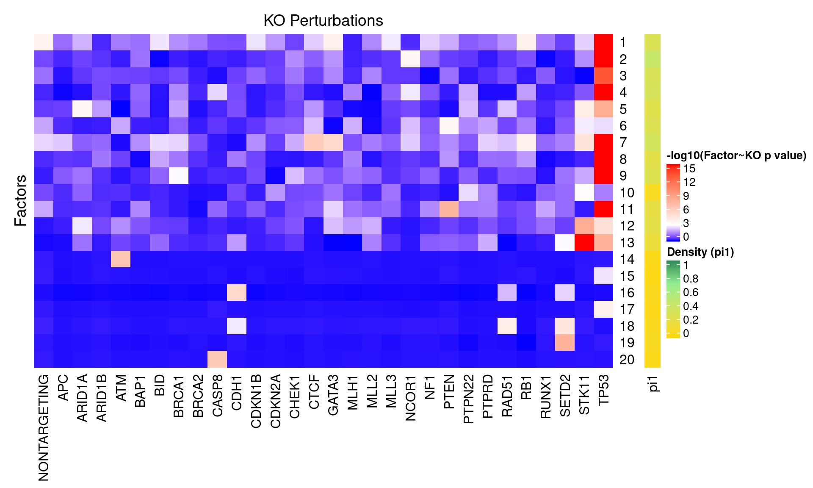
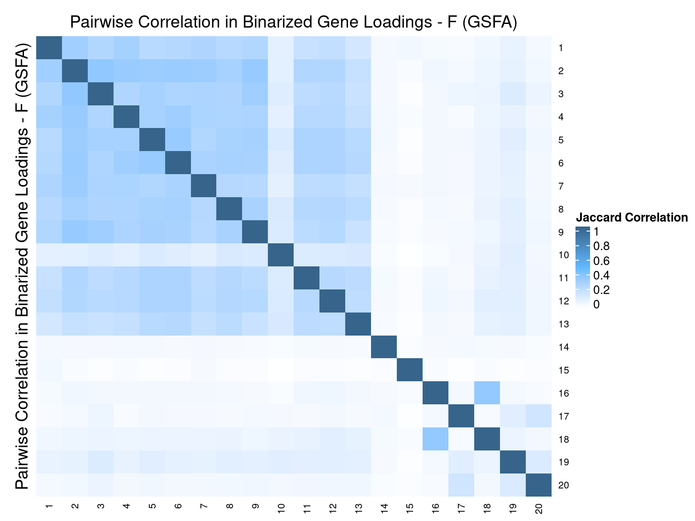
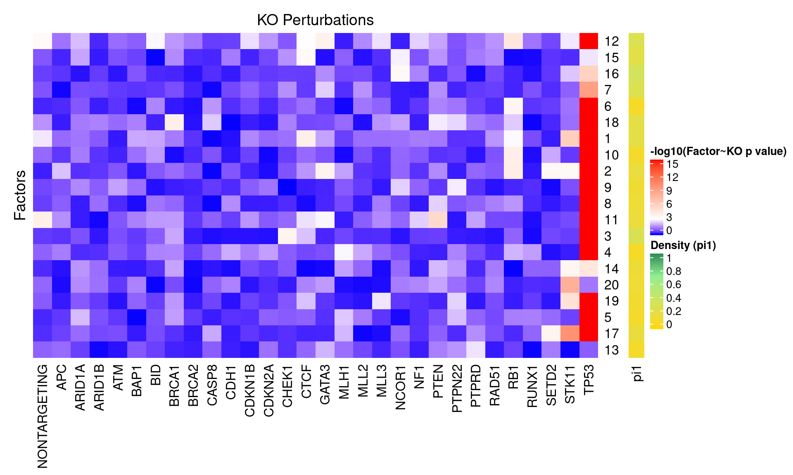
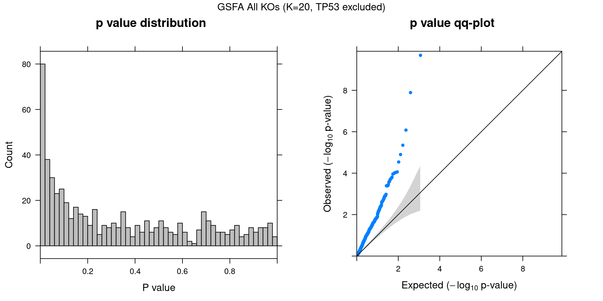

Guided Factor Analysis on MCF10A Treated
– Genes Filtered by Variability
Yifan Zhou (zhouyf@uchicago.edu)
2020-11-09
1 Single cell expression data
CROP-seq data are from this paper: On the design of CRISPR-based single cell molecular screens, GEO accession: GSE108699.
Perturbations:
Knock-outs of 29 tumor-suppressor genes (TP53, …), 1 non-targeting control.
Cells:
MCF10A cells (normal human breast epithelial cells) with exposure to a DNA damaging agent, doxorubicin.
Only cells with gRNA readout were kept, resulted in 5584 cells.
Genes:
Only the top 10K variable genes by vst (also detected in at least 10 cells) were kept.
Normalization:
Seurat “LogNormalize”: log(count per 10K + 1).
Library size was regressed out, and the residuals were used as input.
2 Factor correlation results
Guided sparse factor analysis, with the \(G\) matrix being 30 types of KO conditions across cells.
2.1 SVD Initialization


2.2 Random Initialization
2.3 Difference btw Methods in Factor Estimation
2.4 Correlation btw Factors



3 Gene Ontology Enrichment Analysis
Genes w/ non-zero loadings vs all genes selected for factor analysis.
GO category: Biological Process.
3.1 PIP cutoff at 0.5
GO terms that passed overrpresentation analysis fold change \(\geq\) 2 and q value \(<\) 0.05:| ID | Description | GeneRatio | BgRatio | FoldChange | qvalue |
|---|---|---|---|---|---|
| GO:1903047 | mitotic cell cycle process | 293/2241 | 425/6553 | 2.02 | 4.71e-48 |
| GO:0051301 | cell division | 223/2241 | 325/6553 | 2.01 | 1.60e-35 |
| GO:0006281 | DNA repair | 183/2241 | 248/6553 | 2.16 | 1.60e-35 |
| GO:0044770 | cell cycle phase transition | 198/2241 | 288/6553 | 2.01 | 1.19e-31 |
| GO:0044772 | mitotic cell cycle phase transition | 188/2241 | 270/6553 | 2.04 | 3.76e-31 |
| GO:0007059 | chromosome segregation | 137/2241 | 177/6553 | 2.26 | 4.23e-30 |
| GO:0006260 | DNA replication | 127/2241 | 165/6553 | 2.25 | 2.21e-27 |
| GO:0000280 | nuclear division | 157/2241 | 224/6553 | 2.05 | 2.70e-26 |
| GO:0098813 | nuclear chromosome segregation | 112/2241 | 146/6553 | 2.24 | 7.73e-24 |
| GO:0140014 | mitotic nuclear division | 119/2241 | 159/6553 | 2.19 | 9.31e-24 |
| GO:0000819 | sister chromatid segregation | 89/2241 | 107/6553 | 2.43 | 2.27e-23 |
| GO:0006261 | DNA-dependent DNA replication | 86/2241 | 103/6553 | 2.44 | 8.47e-23 |
| GO:0071103 | DNA conformation change | 101/2241 | 131/6553 | 2.25 | 8.50e-22 |
| GO:1901987 | regulation of cell cycle phase transition | 139/2241 | 203/6553 | 2.00 | 9.93e-22 |
| GO:1901990 | regulation of mitotic cell cycle phase transition | 131/2241 | 189/6553 | 2.03 | 3.45e-21 |
| GO:0006302 | double-strand break repair | 92/2241 | 119/6553 | 2.26 | 5.82e-20 |
| GO:0000070 | mitotic sister chromatid segregation | 77/2241 | 94/6553 | 2.40 | 2.17e-19 |
| GO:0006310 | DNA recombination | 104/2241 | 145/6553 | 2.10 | 2.08e-18 |
| GO:0044839 | cell cycle G2/M phase transition | 93/2241 | 126/6553 | 2.16 | 8.83e-18 |
| GO:0051983 | regulation of chromosome segregation | 53/2241 | 58/6553 | 2.67 | 1.23e-17 |
| GO:0044786 | cell cycle DNA replication | 43/2241 | 44/6553 | 2.86 | 2.87e-17 |
| GO:0000086 | G2/M transition of mitotic cell cycle | 85/2241 | 113/6553 | 2.20 | 4.00e-17 |
| GO:1902749 | regulation of cell cycle G2/M phase transition | 76/2241 | 97/6553 | 2.29 | 4.70e-17 |
| GO:0006323 | DNA packaging | 73/2241 | 92/6553 | 2.32 | 6.19e-17 |
| GO:0071824 | protein-DNA complex subunit organization | 87/2241 | 119/6553 | 2.14 | 3.14e-16 |
| GO:0006333 | chromatin assembly or disassembly | 64/2241 | 79/6553 | 2.37 | 1.27e-15 |
| GO:0010389 | regulation of G2/M transition of mitotic cell cycle | 68/2241 | 86/6553 | 2.31 | 1.33e-15 |
| GO:0033260 | nuclear DNA replication | 36/2241 | 37/6553 | 2.85 | 3.42e-14 |
| GO:0065004 | protein-DNA complex assembly | 78/2241 | 108/6553 | 2.11 | 4.69e-14 |
| GO:0007088 | regulation of mitotic nuclear division | 74/2241 | 101/6553 | 2.14 | 7.19e-14 |
| GO:0000075 | cell cycle checkpoint | 85/2241 | 123/6553 | 2.02 | 1.58e-13 |
| GO:0031497 | chromatin assembly | 58/2241 | 73/6553 | 2.32 | 1.82e-13 |
| GO:0051783 | regulation of nuclear division | 76/2241 | 107/6553 | 2.08 | 4.56e-13 |
| GO:0034728 | nucleosome organization | 56/2241 | 71/6553 | 2.31 | 9.30e-13 |
| GO:0033045 | regulation of sister chromatid segregation | 41/2241 | 46/6553 | 2.61 | 9.30e-13 |
| GO:0000723 | telomere maintenance | 62/2241 | 82/6553 | 2.21 | 1.19e-12 |
| GO:0032200 | telomere organization | 63/2241 | 84/6553 | 2.19 | 1.38e-12 |
| GO:0051304 | chromosome separation | 43/2241 | 50/6553 | 2.51 | 3.07e-12 |
| GO:0034508 | centromere complex assembly | 31/2241 | 32/6553 | 2.83 | 4.66e-12 |
| GO:0007051 | spindle organization | 64/2241 | 88/6553 | 2.13 | 8.74e-12 |
| GO:0000725 | recombinational repair | 55/2241 | 72/6553 | 2.23 | 1.50e-11 |
| GO:0007098 | centrosome cycle | 52/2241 | 67/6553 | 2.27 | 2.20e-11 |
| GO:0000724 | double-strand break repair via homologous recombination | 54/2241 | 71/6553 | 2.22 | 3.24e-11 |
| GO:0006338 | chromatin remodeling | 54/2241 | 71/6553 | 2.22 | 3.24e-11 |
| GO:0007093 | mitotic cell cycle checkpoint | 69/2241 | 100/6553 | 2.02 | 5.78e-11 |
| GO:0006334 | nucleosome assembly | 48/2241 | 61/6553 | 2.30 | 6.78e-11 |
| GO:0007062 | sister chromatid cohesion | 28/2241 | 29/6553 | 2.82 | 9.31e-11 |
| GO:0031055 | chromatin remodeling at centromere | 28/2241 | 29/6553 | 2.82 | 9.31e-11 |
| GO:0034502 | protein localization to chromosome | 40/2241 | 48/6553 | 2.44 | 1.64e-10 |
| GO:0033047 | regulation of mitotic sister chromatid segregation | 35/2241 | 40/6553 | 2.56 | 2.06e-10 |
| GO:0043044 | ATP-dependent chromatin remodeling | 35/2241 | 40/6553 | 2.56 | 2.06e-10 |
| GO:0043486 | histone exchange | 29/2241 | 31/6553 | 2.74 | 3.06e-10 |
| GO:0031023 | microtubule organizing center organization | 53/2241 | 72/6553 | 2.15 | 4.08e-10 |
| GO:0034080 | CENP-A containing nucleosome assembly | 26/2241 | 27/6553 | 2.82 | 6.43e-10 |
| GO:0061641 | CENP-A containing chromatin organization | 26/2241 | 27/6553 | 2.82 | 6.43e-10 |
| GO:0051306 | mitotic sister chromatid separation | 32/2241 | 36/6553 | 2.60 | 6.43e-10 |
| GO:0006336 | DNA replication-independent nucleosome assembly | 28/2241 | 30/6553 | 2.73 | 7.78e-10 |
| GO:0034724 | DNA replication-independent nucleosome organization | 28/2241 | 30/6553 | 2.73 | 7.78e-10 |
| GO:0010965 | regulation of mitotic sister chromatid separation | 31/2241 | 35/6553 | 2.59 | 1.54e-09 |
| GO:1905818 | regulation of chromosome separation | 31/2241 | 35/6553 | 2.59 | 1.54e-09 |
| GO:0007091 | metaphase/anaphase transition of mitotic cell cycle | 30/2241 | 34/6553 | 2.58 | 3.81e-09 |
| GO:0044784 | metaphase/anaphase transition of cell cycle | 30/2241 | 34/6553 | 2.58 | 3.81e-09 |
| GO:0032201 | telomere maintenance via semi-conservative replication | 21/2241 | 21/6553 | 2.92 | 6.42e-09 |
| GO:0030071 | regulation of mitotic metaphase/anaphase transition | 29/2241 | 33/6553 | 2.57 | 9.17e-09 |
| GO:1902099 | regulation of metaphase/anaphase transition of cell cycle | 29/2241 | 33/6553 | 2.57 | 9.17e-09 |
| GO:0006289 | nucleotide-excision repair | 35/2241 | 43/6553 | 2.38 | 9.80e-09 |
| GO:0036297 | interstrand cross-link repair | 27/2241 | 30/6553 | 2.63 | 1.13e-08 |
| GO:0007052 | mitotic spindle organization | 46/2241 | 63/6553 | 2.14 | 1.16e-08 |
| GO:1902850 | microtubule cytoskeleton organization involved in mitosis | 52/2241 | 75/6553 | 2.03 | 1.77e-08 |
| GO:1901989 | positive regulation of cell cycle phase transition | 37/2241 | 48/6553 | 2.25 | 4.72e-08 |
| GO:1905819 | negative regulation of chromosome separation | 24/2241 | 27/6553 | 2.60 | 1.83e-07 |
| GO:2000816 | negative regulation of mitotic sister chromatid separation | 24/2241 | 27/6553 | 2.60 | 1.83e-07 |
| GO:0033046 | negative regulation of sister chromatid segregation | 25/2241 | 29/6553 | 2.52 | 3.25e-07 |
| GO:0051985 | negative regulation of chromosome segregation | 25/2241 | 29/6553 | 2.52 | 3.25e-07 |
| GO:0006297 | nucleotide-excision repair, DNA gap filling | 17/2241 | 17/6553 | 2.92 | 3.66e-07 |
| GO:0051984 | positive regulation of chromosome segregation | 17/2241 | 17/6553 | 2.92 | 3.66e-07 |
| GO:0045841 | negative regulation of mitotic metaphase/anaphase transition | 23/2241 | 26/6553 | 2.59 | 4.44e-07 |
| GO:1902100 | negative regulation of metaphase/anaphase transition of cell cycle | 23/2241 | 26/6553 | 2.59 | 4.44e-07 |
| GO:0033683 | nucleotide-excision repair, DNA incision | 19/2241 | 20/6553 | 2.78 | 5.45e-07 |
| GO:0033048 | negative regulation of mitotic sister chromatid segregation | 24/2241 | 28/6553 | 2.51 | 7.61e-07 |
| GO:0006282 | regulation of DNA repair | 39/2241 | 55/6553 | 2.07 | 7.85e-07 |
| GO:0051225 | spindle assembly | 39/2241 | 55/6553 | 2.07 | 7.85e-07 |
| GO:1901992 | positive regulation of mitotic cell cycle phase transition | 32/2241 | 42/6553 | 2.23 | 8.44e-07 |
| GO:0071459 | protein localization to chromosome, centromeric region | 16/2241 | 16/6553 | 2.92 | 9.68e-07 |
| GO:0097711 | ciliary basal body-plasma membrane docking | 33/2241 | 44/6553 | 2.19 | 9.83e-07 |
| GO:0030261 | chromosome condensation | 22/2241 | 25/6553 | 2.57 | 1.05e-06 |
| GO:0045005 | DNA-dependent DNA replication maintenance of fidelity | 25/2241 | 30/6553 | 2.44 | 1.14e-06 |
| GO:0007099 | centriole replication | 20/2241 | 22/6553 | 2.66 | 1.33e-06 |
| GO:0000018 | regulation of DNA recombination | 36/2241 | 50/6553 | 2.11 | 1.36e-06 |
| GO:0006296 | nucleotide-excision repair, DNA incision, 5’-to lesion | 18/2241 | 19/6553 | 2.77 | 1.37e-06 |
| GO:0090329 | regulation of DNA-dependent DNA replication | 26/2241 | 32/6553 | 2.38 | 1.58e-06 |
| GO:0032392 | DNA geometric change | 31/2241 | 41/6553 | 2.21 | 1.74e-06 |
| GO:0051310 | metaphase plate congression | 27/2241 | 34/6553 | 2.32 | 2.09e-06 |
| GO:0007094 | mitotic spindle assembly checkpoint | 21/2241 | 24/6553 | 2.56 | 2.44e-06 |
| GO:0031577 | spindle checkpoint | 21/2241 | 24/6553 | 2.56 | 2.44e-06 |
| GO:0071173 | spindle assembly checkpoint | 21/2241 | 24/6553 | 2.56 | 2.44e-06 |
| GO:0071174 | mitotic spindle checkpoint | 21/2241 | 24/6553 | 2.56 | 2.44e-06 |
| GO:1902751 | positive regulation of cell cycle G2/M phase transition | 21/2241 | 24/6553 | 2.56 | 2.44e-06 |
| GO:0051383 | kinetochore organization | 15/2241 | 15/6553 | 2.92 | 2.50e-06 |
| GO:0045839 | negative regulation of mitotic nuclear division | 28/2241 | 36/6553 | 2.27 | 2.55e-06 |
| GO:0051298 | centrosome duplication | 29/2241 | 38/6553 | 2.23 | 3.09e-06 |
| GO:0031145 | anaphase-promoting complex-dependent catabolic process | 19/2241 | 21/6553 | 2.65 | 3.14e-06 |
| GO:0000726 | non-recombinational repair | 30/2241 | 40/6553 | 2.19 | 3.49e-06 |
| GO:0050000 | chromosome localization | 30/2241 | 40/6553 | 2.19 | 3.49e-06 |
| GO:0051303 | establishment of chromosome localization | 30/2241 | 40/6553 | 2.19 | 3.49e-06 |
| GO:0051784 | negative regulation of nuclear division | 30/2241 | 40/6553 | 2.19 | 3.49e-06 |
| GO:0042769 | DNA damage response, detection of DNA damage | 22/2241 | 26/6553 | 2.47 | 3.79e-06 |
| GO:0000731 | DNA synthesis involved in DNA repair | 26/2241 | 33/6553 | 2.30 | 4.29e-06 |
| GO:0032508 | DNA duplex unwinding | 26/2241 | 33/6553 | 2.30 | 4.29e-06 |
| GO:0006283 | transcription-coupled nucleotide-excision repair | 23/2241 | 28/6553 | 2.40 | 5.50e-06 |
| GO:0031123 | RNA 3’-end processing | 37/2241 | 54/6553 | 2.00 | 5.66e-06 |
| GO:0006301 | postreplication repair | 24/2241 | 30/6553 | 2.34 | 7.41e-06 |
| GO:0008608 | attachment of spindle microtubules to kinetochore | 18/2241 | 20/6553 | 2.63 | 7.46e-06 |
| GO:0019985 | translesion synthesis | 21/2241 | 25/6553 | 2.46 | 8.82e-06 |
| GO:0006284 | base-excision repair | 22/2241 | 27/6553 | 2.38 | 1.26e-05 |
| GO:0006303 | double-strand break repair via nonhomologous end joining | 27/2241 | 36/6553 | 2.19 | 1.34e-05 |
| GO:0034501 | protein localization to kinetochore | 13/2241 | 13/6553 | 2.92 | 1.77e-05 |
| GO:0022616 | DNA strand elongation | 17/2241 | 19/6553 | 2.62 | 1.86e-05 |
| GO:0045132 | meiotic chromosome segregation | 32/2241 | 46/6553 | 2.03 | 1.99e-05 |
| GO:0098534 | centriole assembly | 20/2241 | 24/6553 | 2.44 | 2.02e-05 |
| GO:2000779 | regulation of double-strand break repair | 27/2241 | 37/6553 | 2.13 | 3.14e-05 |
| GO:0010971 | positive regulation of G2/M transition of mitotic cell cycle | 18/2241 | 21/6553 | 2.51 | 3.21e-05 |
| GO:0031297 | replication fork processing | 19/2241 | 23/6553 | 2.42 | 4.78e-05 |
| GO:0006614 | SRP-dependent cotranslational protein targeting to membrane | 24/2241 | 32/6553 | 2.19 | 5.20e-05 |
| GO:0006271 | DNA strand elongation involved in DNA replication | 14/2241 | 15/6553 | 2.73 | 5.62e-05 |
| GO:0006613 | cotranslational protein targeting to membrane | 25/2241 | 34/6553 | 2.15 | 5.79e-05 |
| GO:0007080 | mitotic metaphase plate congression | 20/2241 | 25/6553 | 2.34 | 6.30e-05 |
| GO:0045047 | protein targeting to ER | 26/2241 | 36/6553 | 2.11 | 6.30e-05 |
| GO:0000184 | nuclear-transcribed mRNA catabolic process, nonsense-mediated decay | 28/2241 | 40/6553 | 2.05 | 7.13e-05 |
| GO:1901976 | regulation of cell cycle checkpoint | 17/2241 | 20/6553 | 2.49 | 7.48e-05 |
| GO:0006270 | DNA replication initiation | 18/2241 | 22/6553 | 2.39 | 1.05e-04 |
| GO:0045910 | negative regulation of DNA recombination | 18/2241 | 22/6553 | 2.39 | 1.05e-04 |
| GO:0045739 | positive regulation of DNA repair | 23/2241 | 31/6553 | 2.17 | 1.05e-04 |
| GO:0046605 | regulation of centrosome cycle | 23/2241 | 31/6553 | 2.17 | 1.05e-04 |
| GO:0006312 | mitotic recombination | 11/2241 | 11/6553 | 2.92 | 1.26e-04 |
| GO:0070987 | error-free translesion synthesis | 11/2241 | 11/6553 | 2.92 | 1.26e-04 |
| GO:0072599 | establishment of protein localization to endoplasmic reticulum | 26/2241 | 37/6553 | 2.05 | 1.32e-04 |
| GO:0042276 | error-prone translesion synthesis | 13/2241 | 14/6553 | 2.72 | 1.36e-04 |
| GO:0007131 | reciprocal meiotic recombination | 20/2241 | 26/6553 | 2.25 | 1.65e-04 |
| GO:0035825 | homologous recombination | 20/2241 | 26/6553 | 2.25 | 1.65e-04 |
| GO:0000083 | regulation of transcription involved in G1/S transition of mitotic cell cycle | 16/2241 | 19/6553 | 2.46 | 1.66e-04 |
| GO:0006298 | mismatch repair | 16/2241 | 19/6553 | 2.46 | 1.66e-04 |
| GO:0090307 | mitotic spindle assembly | 25/2241 | 36/6553 | 2.03 | 2.54e-04 |
| GO:2001021 | negative regulation of response to DNA damage stimulus | 26/2241 | 38/6553 | 2.00 | 2.58e-04 |
| GO:0051382 | kinetochore assembly | 10/2241 | 10/6553 | 2.92 | 3.30e-04 |
| GO:0007063 | regulation of sister chromatid cohesion | 12/2241 | 13/6553 | 2.70 | 3.38e-04 |
| GO:0046599 | regulation of centriole replication | 12/2241 | 13/6553 | 2.70 | 3.38e-04 |
| GO:0009262 | deoxyribonucleotide metabolic process | 19/2241 | 25/6553 | 2.22 | 3.45e-04 |
| GO:0043628 | ncRNA 3’-end processing | 15/2241 | 18/6553 | 2.44 | 3.85e-04 |
| GO:0006119 | oxidative phosphorylation | 20/2241 | 27/6553 | 2.17 | 3.93e-04 |
| GO:0010824 | regulation of centrosome duplication | 18/2241 | 24/6553 | 2.19 | 7.29e-04 |
| GO:0000076 | DNA replication checkpoint | 11/2241 | 12/6553 | 2.68 | 8.41e-04 |
| GO:0007064 | mitotic sister chromatid cohesion | 11/2241 | 12/6553 | 2.68 | 8.41e-04 |
| GO:0044766 | multi-organism transport | 11/2241 | 12/6553 | 2.68 | 8.41e-04 |
| GO:1902579 | multi-organism localization | 11/2241 | 12/6553 | 2.68 | 8.41e-04 |
| GO:0002562 | somatic diversification of immune receptors via germline recombination within a single locus | 21/2241 | 30/6553 | 2.05 | 8.99e-04 |
| GO:0016444 | somatic cell DNA recombination | 21/2241 | 30/6553 | 2.05 | 8.99e-04 |
| GO:0007143 | female meiotic nuclear division | 15/2241 | 19/6553 | 2.31 | 1.11e-03 |
| GO:0000291 | nuclear-transcribed mRNA catabolic process, exonucleolytic | 12/2241 | 14/6553 | 2.51 | 1.39e-03 |
| GO:0009264 | deoxyribonucleotide catabolic process | 12/2241 | 14/6553 | 2.51 | 1.39e-03 |
| GO:0043928 | exonucleolytic nuclear-transcribed mRNA catabolic process involved in deadenylation-dependent decay | 12/2241 | 14/6553 | 2.51 | 1.39e-03 |
| GO:1904031 | positive regulation of cyclin-dependent protein kinase activity | 12/2241 | 14/6553 | 2.51 | 1.39e-03 |
| GO:2000781 | positive regulation of double-strand break repair | 12/2241 | 14/6553 | 2.51 | 1.39e-03 |
| GO:0070316 | regulation of G0 to G1 transition | 17/2241 | 23/6553 | 2.16 | 1.47e-03 |
| GO:0031935 | regulation of chromatin silencing | 14/2241 | 18/6553 | 2.27 | 2.36e-03 |
| GO:0070317 | negative regulation of G0 to G1 transition | 15/2241 | 20/6553 | 2.19 | 2.71e-03 |
| GO:0045023 | G0 to G1 transition | 17/2241 | 24/6553 | 2.07 | 3.12e-03 |
| GO:0045740 | positive regulation of DNA replication | 17/2241 | 24/6553 | 2.07 | 3.12e-03 |
| GO:0016447 | somatic recombination of immunoglobulin gene segments | 18/2241 | 26/6553 | 2.02 | 3.19e-03 |
| GO:0032069 | regulation of nuclease activity | 12/2241 | 15/6553 | 2.34 | 4.10e-03 |
| GO:0046386 | deoxyribose phosphate catabolic process | 12/2241 | 15/6553 | 2.34 | 4.10e-03 |
| GO:0051307 | meiotic chromosome separation | 12/2241 | 15/6553 | 2.34 | 4.10e-03 |
| GO:2000104 | negative regulation of DNA-dependent DNA replication | 12/2241 | 15/6553 | 2.34 | 4.10e-03 |
| GO:0032467 | positive regulation of cytokinesis | 13/2241 | 17/6553 | 2.24 | 4.94e-03 |
| GO:0045911 | positive regulation of DNA recombination | 14/2241 | 19/6553 | 2.15 | 5.48e-03 |
| GO:0009394 | 2’-deoxyribonucleotide metabolic process | 15/2241 | 21/6553 | 2.09 | 5.84e-03 |
| GO:0010569 | regulation of double-strand break repair via homologous recombination | 15/2241 | 21/6553 | 2.09 | 5.84e-03 |
| GO:0002204 | somatic recombination of immunoglobulin genes involved in immune response | 16/2241 | 23/6553 | 2.03 | 5.91e-03 |
| GO:0002208 | somatic diversification of immunoglobulins involved in immune response | 16/2241 | 23/6553 | 2.03 | 5.91e-03 |
| GO:0016572 | histone phosphorylation | 16/2241 | 23/6553 | 2.03 | 5.91e-03 |
| GO:0019692 | deoxyribose phosphate metabolic process | 16/2241 | 23/6553 | 2.03 | 5.91e-03 |
| GO:0045190 | isotype switching | 16/2241 | 23/6553 | 2.03 | 5.91e-03 |
| GO:0000387 | spliceosomal snRNP assembly | 10/2241 | 12/6553 | 2.44 | 6.86e-03 |
| GO:0007076 | mitotic chromosome condensation | 10/2241 | 12/6553 | 2.44 | 6.86e-03 |
| GO:0009200 | deoxyribonucleoside triphosphate metabolic process | 10/2241 | 12/6553 | 2.44 | 6.86e-03 |
| GO:0070828 | heterochromatin organization | 10/2241 | 12/6553 | 2.44 | 6.86e-03 |
| GO:0090231 | regulation of spindle checkpoint | 10/2241 | 12/6553 | 2.44 | 6.86e-03 |
| GO:0090266 | regulation of mitotic cell cycle spindle assembly checkpoint | 10/2241 | 12/6553 | 2.44 | 6.86e-03 |
| GO:1903504 | regulation of mitotic spindle checkpoint | 10/2241 | 12/6553 | 2.44 | 6.86e-03 |
| GO:0045830 | positive regulation of isotype switching | 12/2241 | 16/6553 | 2.19 | 9.88e-03 |
| GO:0072698 | protein localization to microtubule cytoskeleton | 12/2241 | 16/6553 | 2.19 | 9.88e-03 |
| GO:0044380 | protein localization to cytoskeleton | 13/2241 | 18/6553 | 2.11 | 1.06e-02 |
| GO:0006999 | nuclear pore organization | 9/2241 | 11/6553 | 2.39 | 1.51e-02 |
| GO:0016075 | rRNA catabolic process | 9/2241 | 11/6553 | 2.39 | 1.51e-02 |
| GO:0045737 | positive regulation of cyclin-dependent protein serine/threonine kinase activity | 9/2241 | 11/6553 | 2.39 | 1.51e-02 |
| GO:0046827 | positive regulation of protein export from nucleus | 9/2241 | 11/6553 | 2.39 | 1.51e-02 |
| GO:0070734 | histone H3-K27 methylation | 9/2241 | 11/6553 | 2.39 | 1.51e-02 |
| GO:0071539 | protein localization to centrosome | 9/2241 | 11/6553 | 2.39 | 1.51e-02 |
| GO:1902175 | regulation of oxidative stress-induced intrinsic apoptotic signaling pathway | 9/2241 | 11/6553 | 2.39 | 1.51e-02 |
| GO:1905508 | protein localization to microtubule organizing center | 9/2241 | 11/6553 | 2.39 | 1.51e-02 |
| GO:0046112 | nucleobase biosynthetic process | 10/2241 | 13/6553 | 2.25 | 1.80e-02 |
| GO:0071168 | protein localization to chromatin | 10/2241 | 13/6553 | 2.25 | 1.80e-02 |
| GO:1904666 | regulation of ubiquitin protein ligase activity | 10/2241 | 13/6553 | 2.25 | 1.80e-02 |
| GO:0070198 | protein localization to chromosome, telomeric region | 11/2241 | 15/6553 | 2.14 | 1.94e-02 |
| GO:0070199 | establishment of protein localization to chromosome | 11/2241 | 15/6553 | 2.14 | 1.94e-02 |
| GO:0031062 | positive regulation of histone methylation | 12/2241 | 17/6553 | 2.06 | 2.01e-02 |
| GO:0046825 | regulation of protein export from nucleus | 12/2241 | 17/6553 | 2.06 | 2.01e-02 |
| GO:0051290 | protein heterotetramerization | 12/2241 | 17/6553 | 2.06 | 2.01e-02 |
| GO:0008156 | negative regulation of DNA replication | 13/2241 | 19/6553 | 2.00 | 2.02e-02 |
| GO:0008631 | intrinsic apoptotic signaling pathway in response to oxidative stress | 13/2241 | 19/6553 | 2.00 | 2.02e-02 |
| GO:0045191 | regulation of isotype switching | 13/2241 | 19/6553 | 2.00 | 2.02e-02 |
| GO:0000712 | resolution of meiotic recombination intermediates | 8/2241 | 10/6553 | 2.34 | 3.24e-02 |
| GO:0000715 | nucleotide-excision repair, DNA damage recognition | 8/2241 | 10/6553 | 2.34 | 3.24e-02 |
| GO:0006266 | DNA ligation | 8/2241 | 10/6553 | 2.34 | 3.24e-02 |
| GO:0006335 | DNA replication-dependent nucleosome assembly | 8/2241 | 10/6553 | 2.34 | 3.24e-02 |
| GO:0034723 | DNA replication-dependent nucleosome organization | 8/2241 | 10/6553 | 2.34 | 3.24e-02 |
| GO:0050686 | negative regulation of mRNA processing | 8/2241 | 10/6553 | 2.34 | 3.24e-02 |
| GO:2001032 | regulation of double-strand break repair via nonhomologous end joining | 8/2241 | 10/6553 | 2.34 | 3.24e-02 |
| GO:0009219 | pyrimidine deoxyribonucleotide metabolic process | 10/2241 | 14/6553 | 2.09 | 3.78e-02 |
| GO:0034661 | ncRNA catabolic process | 10/2241 | 14/6553 | 2.09 | 3.78e-02 |
| GO:0006369 | termination of RNA polymerase II transcription | 11/2241 | 16/6553 | 2.01 | 3.80e-02 |
| GO:0045738 | negative regulation of DNA repair | 11/2241 | 16/6553 | 2.01 | 3.80e-02 |
| GO:2000780 | negative regulation of double-strand break repair | 11/2241 | 16/6553 | 2.01 | 3.80e-02 |
| ID | Description | GeneRatio | BgRatio | FoldChange | qvalue |
|---|---|---|---|---|---|
| GO:0016075 | rRNA catabolic process | 11/3236 | 11/6553 | 2.03 | 0.00726 |
| GO:0016137 | glycoside metabolic process | 11/3236 | 11/6553 | 2.03 | 0.00726 |
| GO:0000715 | nucleotide-excision repair, DNA damage recognition | 10/3236 | 10/6553 | 2.03 | 0.01229 |
| GO:0006099 | tricarboxylic acid cycle | 10/3236 | 10/6553 | 2.03 | 0.01229 |
| GO:0031581 | hemidesmosome assembly | 10/3236 | 10/6553 | 2.03 | 0.01229 |
| ID | Description | GeneRatio | BgRatio | FoldChange | qvalue |
|---|---|---|---|---|---|
| GO:0006397 | mRNA processing | 135/2414 | 179/6553 | 2.05 | 2.29e-23 |
| GO:0008380 | RNA splicing | 126/2414 | 164/6553 | 2.09 | 4.25e-23 |
| GO:0000375 | RNA splicing, via transesterification reactions | 103/2414 | 132/6553 | 2.12 | 1.51e-19 |
| GO:0000377 | RNA splicing, via transesterification reactions with bulged adenosine as nucleophile | 102/2414 | 131/6553 | 2.11 | 2.34e-19 |
| GO:0000398 | mRNA splicing, via spliceosome | 102/2414 | 131/6553 | 2.11 | 2.34e-19 |
| GO:0006413 | translational initiation | 52/2414 | 64/6553 | 2.21 | 8.31e-11 |
| GO:0000184 | nuclear-transcribed mRNA catabolic process, nonsense-mediated decay | 36/2414 | 40/6553 | 2.44 | 7.31e-10 |
| GO:0070972 | protein localization to endoplasmic reticulum | 40/2414 | 47/6553 | 2.31 | 2.13e-09 |
| GO:1902653 | secondary alcohol biosynthetic process | 38/2414 | 45/6553 | 2.29 | 8.46e-09 |
| GO:0016126 | sterol biosynthetic process | 39/2414 | 47/6553 | 2.25 | 1.15e-08 |
| GO:0045047 | protein targeting to ER | 32/2414 | 36/6553 | 2.41 | 1.42e-08 |
| GO:0006695 | cholesterol biosynthetic process | 37/2414 | 44/6553 | 2.28 | 1.55e-08 |
| GO:0072599 | establishment of protein localization to endoplasmic reticulum | 32/2414 | 37/6553 | 2.35 | 5.42e-08 |
| GO:0006414 | translational elongation | 41/2414 | 52/6553 | 2.14 | 5.96e-08 |
| GO:0006613 | cotranslational protein targeting to membrane | 30/2414 | 34/6553 | 2.40 | 6.38e-08 |
| GO:0006614 | SRP-dependent cotranslational protein targeting to membrane | 28/2414 | 32/6553 | 2.38 | 3.19e-07 |
| GO:0006415 | translational termination | 32/2414 | 39/6553 | 2.23 | 6.03e-07 |
| GO:0043484 | regulation of RNA splicing | 41/2414 | 55/6553 | 2.02 | 8.30e-07 |
| GO:0045540 | regulation of cholesterol biosynthetic process | 26/2414 | 30/6553 | 2.35 | 1.46e-06 |
| GO:0106118 | regulation of sterol biosynthetic process | 26/2414 | 30/6553 | 2.35 | 1.46e-06 |
| GO:0070125 | mitochondrial translational elongation | 29/2414 | 35/6553 | 2.25 | 1.74e-06 |
| GO:0070126 | mitochondrial translational termination | 28/2414 | 34/6553 | 2.24 | 3.60e-06 |
| GO:0090181 | regulation of cholesterol metabolic process | 28/2414 | 34/6553 | 2.24 | 3.60e-06 |
| GO:0002181 | cytoplasmic translation | 23/2414 | 29/6553 | 2.15 | 1.42e-04 |
| GO:0048024 | regulation of mRNA splicing, via spliceosome | 28/2414 | 38/6553 | 2.00 | 1.59e-04 |
| GO:0031124 | mRNA 3’-end processing | 26/2414 | 35/6553 | 2.02 | 2.63e-04 |
| GO:0030433 | ubiquitin-dependent ERAD pathway | 21/2414 | 27/6553 | 2.11 | 5.61e-04 |
| GO:1903573 | negative regulation of response to endoplasmic reticulum stress | 18/2414 | 22/6553 | 2.22 | 6.56e-04 |
| GO:0000045 | autophagosome assembly | 21/2414 | 28/6553 | 2.04 | 1.36e-03 |
| GO:1905037 | autophagosome organization | 21/2414 | 28/6553 | 2.04 | 1.36e-03 |
| GO:0000715 | nucleotide-excision repair, DNA damage recognition | 10/2414 | 10/6553 | 2.71 | 1.40e-03 |
| GO:0031581 | hemidesmosome assembly | 10/2414 | 10/6553 | 2.71 | 1.40e-03 |
| GO:0046949 | fatty-acyl-CoA biosynthetic process | 15/2414 | 18/6553 | 2.26 | 2.10e-03 |
| GO:0000422 | autophagy of mitochondrion | 19/2414 | 25/6553 | 2.06 | 2.21e-03 |
| GO:0061726 | mitochondrion disassembly | 19/2414 | 25/6553 | 2.06 | 2.21e-03 |
| GO:0033120 | positive regulation of RNA splicing | 13/2414 | 15/6553 | 2.35 | 2.88e-03 |
| GO:1902235 | regulation of endoplasmic reticulum stress-induced intrinsic apoptotic signaling pathway | 13/2414 | 15/6553 | 2.35 | 2.88e-03 |
| GO:0000387 | spliceosomal snRNP assembly | 11/2414 | 12/6553 | 2.49 | 3.49e-03 |
| GO:0002753 | cytoplasmic pattern recognition receptor signaling pathway | 18/2414 | 24/6553 | 2.04 | 3.77e-03 |
| GO:0051290 | protein heterotetramerization | 14/2414 | 17/6553 | 2.24 | 3.79e-03 |
| GO:0006378 | mRNA polyadenylation | 12/2414 | 14/6553 | 2.33 | 5.28e-03 |
| GO:0007032 | endosome organization | 16/2414 | 21/6553 | 2.07 | 5.70e-03 |
| GO:0042149 | cellular response to glucose starvation | 16/2414 | 21/6553 | 2.07 | 5.70e-03 |
| GO:0046827 | positive regulation of protein export from nucleus | 10/2414 | 11/6553 | 2.47 | 6.54e-03 |
| GO:0006369 | termination of RNA polymerase II transcription | 13/2414 | 16/6553 | 2.21 | 7.01e-03 |
| GO:0019076 | viral release from host cell | 11/2414 | 13/6553 | 2.30 | 1.01e-02 |
| GO:0035890 | exit from host | 11/2414 | 13/6553 | 2.30 | 1.01e-02 |
| GO:0035891 | exit from host cell | 11/2414 | 13/6553 | 2.30 | 1.01e-02 |
| GO:0052126 | movement in host environment | 11/2414 | 13/6553 | 2.30 | 1.01e-02 |
| GO:0052192 | movement in environment of other organism involved in symbiotic interaction | 11/2414 | 13/6553 | 2.30 | 1.01e-02 |
| GO:0008299 | isoprenoid biosynthetic process | 15/2414 | 20/6553 | 2.04 | 1.01e-02 |
| GO:0043631 | RNA polyadenylation | 12/2414 | 15/6553 | 2.17 | 1.35e-02 |
| GO:0045022 | early endosome to late endosome transport | 9/2414 | 10/6553 | 2.44 | 1.36e-02 |
| GO:0016925 | protein sumoylation | 13/2414 | 17/6553 | 2.08 | 1.58e-02 |
| GO:0046825 | regulation of protein export from nucleus | 13/2414 | 17/6553 | 2.08 | 1.58e-02 |
| GO:0061912 | selective autophagy | 11/2414 | 14/6553 | 2.13 | 2.54e-02 |
| GO:0042026 | protein refolding | 12/2414 | 16/6553 | 2.04 | 2.95e-02 |
| GO:1904030 | negative regulation of cyclin-dependent protein kinase activity | 12/2414 | 16/6553 | 2.04 | 2.95e-02 |
| GO:0035338 | long-chain fatty-acyl-CoA biosynthetic process | 9/2414 | 11/6553 | 2.22 | 3.84e-02 |
| GO:1901673 | regulation of mitotic spindle assembly | 9/2414 | 11/6553 | 2.22 | 3.84e-02 |
| GO:1902175 | regulation of oxidative stress-induced intrinsic apoptotic signaling pathway | 9/2414 | 11/6553 | 2.22 | 3.84e-02 |
| GO:1902186 | regulation of viral release from host cell | 9/2414 | 11/6553 | 2.22 | 3.84e-02 |
| GO:0009226 | nucleotide-sugar biosynthetic process | 10/2414 | 13/6553 | 2.09 | 4.58e-02 |
| GO:0016574 | histone ubiquitination | 10/2414 | 13/6553 | 2.09 | 4.58e-02 |
| GO:0032365 | intracellular lipid transport | 10/2414 | 13/6553 | 2.09 | 4.58e-02 |
| GO:0032527 | protein exit from endoplasmic reticulum | 10/2414 | 13/6553 | 2.09 | 4.58e-02 |
| GO:2000352 | negative regulation of endothelial cell apoptotic process | 10/2414 | 13/6553 | 2.09 | 4.58e-02 |
| ID | Description | GeneRatio | BgRatio | FoldChange | qvalue |
|---|---|---|---|---|---|
| GO:0007006 | mitochondrial membrane organization | 29/2299 | 41/6553 | 2.02 | 0.000377 |
| GO:0051383 | kinetochore organization | 14/2299 | 15/6553 | 2.66 | 0.000411 |
| GO:0046902 | regulation of mitochondrial membrane permeability | 21/2299 | 28/6553 | 2.14 | 0.001296 |
| GO:0006614 | SRP-dependent cotranslational protein targeting to membrane | 23/2299 | 32/6553 | 2.05 | 0.001529 |
| GO:0006613 | cotranslational protein targeting to membrane | 24/2299 | 34/6553 | 2.01 | 0.001619 |
| GO:0035794 | positive regulation of mitochondrial membrane permeability | 19/2299 | 25/6553 | 2.17 | 0.001828 |
| GO:1901028 | regulation of mitochondrial outer membrane permeabilization involved in apoptotic signaling pathway | 15/2299 | 18/6553 | 2.38 | 0.001892 |
| GO:0090559 | regulation of membrane permeability | 22/2299 | 31/6553 | 2.02 | 0.002373 |
| GO:1902108 | regulation of mitochondrial membrane permeability involved in apoptotic process | 18/2299 | 24/6553 | 2.14 | 0.003055 |
| GO:1902686 | mitochondrial outer membrane permeabilization involved in programmed cell death | 18/2299 | 24/6553 | 2.14 | 0.003055 |
| GO:1905710 | positive regulation of membrane permeability | 19/2299 | 26/6553 | 2.08 | 0.003323 |
| GO:0000083 | regulation of transcription involved in G1/S transition of mitotic cell cycle | 15/2299 | 19/6553 | 2.25 | 0.003842 |
| GO:1901030 | positive regulation of mitochondrial outer membrane permeabilization involved in apoptotic signaling pathway | 12/2299 | 14/6553 | 2.44 | 0.004594 |
| GO:0097345 | mitochondrial outer membrane permeabilization | 17/2299 | 23/6553 | 2.11 | 0.005078 |
| GO:1902110 | positive regulation of mitochondrial membrane permeability involved in apoptotic process | 17/2299 | 23/6553 | 2.11 | 0.005078 |
| GO:1905819 | negative regulation of chromosome separation | 19/2299 | 27/6553 | 2.01 | 0.005502 |
| GO:2000816 | negative regulation of mitotic sister chromatid separation | 19/2299 | 27/6553 | 2.01 | 0.005502 |
| GO:1900739 | regulation of protein insertion into mitochondrial membrane involved in apoptotic signaling pathway | 10/2299 | 11/6553 | 2.59 | 0.005502 |
| GO:1900740 | positive regulation of protein insertion into mitochondrial membrane involved in apoptotic signaling pathway | 10/2299 | 11/6553 | 2.59 | 0.005502 |
| GO:0031638 | zymogen activation | 17/2299 | 24/6553 | 2.02 | 0.008742 |
| GO:1902751 | positive regulation of cell cycle G2/M phase transition | 17/2299 | 24/6553 | 2.02 | 0.008742 |
| GO:0006978 | DNA damage response, signal transduction by p53 class mediator resulting in transcription of p21 class mediator | 9/2299 | 10/6553 | 2.57 | 0.010645 |
| GO:0051382 | kinetochore assembly | 9/2299 | 10/6553 | 2.57 | 0.010645 |
| GO:0009060 | aerobic respiration | 15/2299 | 21/6553 | 2.04 | 0.013400 |
| GO:0010971 | positive regulation of G2/M transition of mitotic cell cycle | 15/2299 | 21/6553 | 2.04 | 0.013400 |
| GO:0002479 | antigen processing and presentation of exogenous peptide antigen via MHC class I, TAP-dependent | 9/2299 | 11/6553 | 2.33 | 0.028707 |
| GO:0016137 | glycoside metabolic process | 9/2299 | 11/6553 | 2.33 | 0.028707 |
| GO:0042772 | DNA damage response, signal transduction resulting in transcription | 9/2299 | 11/6553 | 2.33 | 0.028707 |
| GO:0001844 | protein insertion into mitochondrial membrane involved in apoptotic signaling pathway | 10/2299 | 13/6553 | 2.19 | 0.033175 |
| GO:0010954 | positive regulation of protein processing | 10/2299 | 13/6553 | 2.19 | 0.033175 |
| GO:0010863 | positive regulation of phospholipase C activity | 11/2299 | 15/6553 | 2.09 | 0.036212 |
| GO:0019048 | modulation by virus of host morphology or physiology | 12/2299 | 17/6553 | 2.01 | 0.037256 |
| GO:0051984 | positive regulation of chromosome segregation | 12/2299 | 17/6553 | 2.01 | 0.037256 |
| ID | Description | GeneRatio | BgRatio | FoldChange | qvalue |
|---|---|---|---|---|---|
| GO:0006613 | cotranslational protein targeting to membrane | 30/1854 | 34/6553 | 3.12 | 2.42e-10 |
| GO:0000184 | nuclear-transcribed mRNA catabolic process, nonsense-mediated decay | 33/1854 | 40/6553 | 2.92 | 7.04e-10 |
| GO:0006413 | translational initiation | 45/1854 | 64/6553 | 2.49 | 1.39e-09 |
| GO:0006614 | SRP-dependent cotranslational protein targeting to membrane | 28/1854 | 32/6553 | 3.09 | 1.60e-09 |
| GO:0045047 | protein targeting to ER | 29/1854 | 36/6553 | 2.85 | 3.64e-08 |
| GO:0072599 | establishment of protein localization to endoplasmic reticulum | 29/1854 | 37/6553 | 2.77 | 1.12e-07 |
| GO:0070972 | protein localization to endoplasmic reticulum | 34/1854 | 47/6553 | 2.56 | 1.30e-07 |
| GO:0042255 | ribosome assembly | 21/1854 | 28/6553 | 2.65 | 5.16e-05 |
| GO:0009267 | cellular response to starvation | 34/1854 | 60/6553 | 2.00 | 2.44e-04 |
| GO:0042273 | ribosomal large subunit biogenesis | 23/1854 | 35/6553 | 2.32 | 2.71e-04 |
| GO:0022904 | respiratory electron transport chain | 15/1854 | 20/6553 | 2.65 | 8.57e-04 |
| GO:0045333 | cellular respiration | 25/1854 | 42/6553 | 2.10 | 9.38e-04 |
| GO:0070126 | mitochondrial translational termination | 21/1854 | 34/6553 | 2.18 | 1.78e-03 |
| GO:0071384 | cellular response to corticosteroid stimulus | 21/1854 | 34/6553 | 2.18 | 1.78e-03 |
| GO:0046128 | purine ribonucleoside metabolic process | 20/1854 | 32/6553 | 2.21 | 2.04e-03 |
| GO:0006415 | translational termination | 23/1854 | 39/6553 | 2.08 | 2.07e-03 |
| GO:0009119 | ribonucleoside metabolic process | 25/1854 | 44/6553 | 2.01 | 2.22e-03 |
| GO:0070125 | mitochondrial translational elongation | 21/1854 | 35/6553 | 2.12 | 2.70e-03 |
| GO:0031638 | zymogen activation | 16/1854 | 24/6553 | 2.36 | 3.06e-03 |
| GO:0034109 | homotypic cell-cell adhesion | 20/1854 | 33/6553 | 2.14 | 3.06e-03 |
| GO:0009163 | nucleoside biosynthetic process | 15/1854 | 22/6553 | 2.41 | 3.13e-03 |
| GO:1901068 | guanosine-containing compound metabolic process | 15/1854 | 22/6553 | 2.41 | 3.13e-03 |
| GO:1901659 | glycosyl compound biosynthetic process | 15/1854 | 22/6553 | 2.41 | 3.13e-03 |
| GO:0042451 | purine nucleoside biosynthetic process | 10/1854 | 12/6553 | 2.95 | 3.13e-03 |
| GO:0046129 | purine ribonucleoside biosynthetic process | 10/1854 | 12/6553 | 2.95 | 3.13e-03 |
| GO:0006119 | oxidative phosphorylation | 17/1854 | 27/6553 | 2.23 | 4.35e-03 |
| GO:0042278 | purine nucleoside metabolic process | 20/1854 | 34/6553 | 2.08 | 4.44e-03 |
| GO:0071385 | cellular response to glucocorticoid stimulus | 19/1854 | 32/6553 | 2.10 | 5.19e-03 |
| GO:0042149 | cellular response to glucose starvation | 14/1854 | 21/6553 | 2.36 | 6.19e-03 |
| GO:0042455 | ribonucleoside biosynthetic process | 13/1854 | 19/6553 | 2.42 | 6.81e-03 |
| GO:1901070 | guanosine-containing compound biosynthetic process | 9/1854 | 11/6553 | 2.89 | 7.30e-03 |
| GO:0042773 | ATP synthesis coupled electron transport | 12/1854 | 17/6553 | 2.49 | 7.30e-03 |
| GO:0042775 | mitochondrial ATP synthesis coupled electron transport | 12/1854 | 17/6553 | 2.49 | 7.30e-03 |
| GO:0051385 | response to mineralocorticoid | 11/1854 | 15/6553 | 2.59 | 7.54e-03 |
| GO:0006903 | vesicle targeting | 16/1854 | 26/6553 | 2.18 | 7.91e-03 |
| GO:0002181 | cytoplasmic translation | 17/1854 | 29/6553 | 2.07 | 1.08e-02 |
| GO:0071349 | cellular response to interleukin-12 | 12/1854 | 18/6553 | 2.36 | 1.40e-02 |
| GO:0042440 | pigment metabolic process | 15/1854 | 25/6553 | 2.12 | 1.54e-02 |
| GO:0033598 | mammary gland epithelial cell proliferation | 10/1854 | 14/6553 | 2.52 | 1.64e-02 |
| GO:0031581 | hemidesmosome assembly | 8/1854 | 10/6553 | 2.83 | 1.65e-02 |
| GO:0097066 | response to thyroid hormone | 9/1854 | 12/6553 | 2.65 | 1.69e-02 |
| GO:0046148 | pigment biosynthetic process | 14/1854 | 23/6553 | 2.15 | 1.73e-02 |
| GO:0009060 | aerobic respiration | 13/1854 | 21/6553 | 2.19 | 2.05e-02 |
| GO:0090114 | COPII-coated vesicle budding | 13/1854 | 21/6553 | 2.19 | 2.05e-02 |
| GO:0070671 | response to interleukin-12 | 12/1854 | 19/6553 | 2.23 | 2.30e-02 |
| GO:1901658 | glycosyl compound catabolic process | 12/1854 | 19/6553 | 2.23 | 2.30e-02 |
| GO:0006084 | acetyl-CoA metabolic process | 11/1854 | 17/6553 | 2.29 | 2.66e-02 |
| GO:0035722 | interleukin-12-mediated signaling pathway | 11/1854 | 17/6553 | 2.29 | 2.66e-02 |
| GO:0071548 | response to dexamethasone | 14/1854 | 24/6553 | 2.06 | 2.71e-02 |
| GO:0000027 | ribosomal large subunit assembly | 10/1854 | 15/6553 | 2.36 | 2.99e-02 |
| GO:0048194 | Golgi vesicle budding | 13/1854 | 22/6553 | 2.09 | 3.19e-02 |
| GO:0048199 | vesicle targeting, to, from or within Golgi | 13/1854 | 22/6553 | 2.09 | 3.19e-02 |
| GO:0009164 | nucleoside catabolic process | 9/1854 | 13/6553 | 2.45 | 3.30e-02 |
| GO:0010939 | regulation of necrotic cell death | 9/1854 | 13/6553 | 2.45 | 3.30e-02 |
| GO:0010954 | positive regulation of protein processing | 9/1854 | 13/6553 | 2.45 | 3.30e-02 |
| GO:0002931 | response to ischemia | 12/1854 | 20/6553 | 2.12 | 3.70e-02 |
| GO:0015949 | nucleobase-containing small molecule interconversion | 11/1854 | 18/6553 | 2.16 | 4.31e-02 |
| GO:0033108 | mitochondrial respiratory chain complex assembly | 11/1854 | 18/6553 | 2.16 | 4.31e-02 |
| ID | Description | GeneRatio | BgRatio | FoldChange | qvalue |
|---|---|---|---|---|---|
| GO:0070126 | mitochondrial translational termination | 28/2093 | 34/6553 | 2.58 | 7.43e-07 |
| GO:0070125 | mitochondrial translational elongation | 28/2093 | 35/6553 | 2.50 | 1.79e-06 |
| GO:0006415 | translational termination | 30/2093 | 39/6553 | 2.41 | 2.52e-06 |
| GO:0006613 | cotranslational protein targeting to membrane | 26/2093 | 34/6553 | 2.39 | 1.76e-05 |
| GO:0070972 | protein localization to endoplasmic reticulum | 32/2093 | 47/6553 | 2.13 | 4.98e-05 |
| GO:0006614 | SRP-dependent cotranslational protein targeting to membrane | 24/2093 | 32/6553 | 2.35 | 7.53e-05 |
| GO:0045047 | protein targeting to ER | 26/2093 | 36/6553 | 2.26 | 8.52e-05 |
| GO:0072599 | establishment of protein localization to endoplasmic reticulum | 26/2093 | 37/6553 | 2.20 | 1.66e-04 |
| GO:0000184 | nuclear-transcribed mRNA catabolic process, nonsense-mediated decay | 26/2093 | 40/6553 | 2.04 | 1.05e-03 |
| GO:0001836 | release of cytochrome c from mitochondria | 20/2093 | 31/6553 | 2.02 | 6.66e-03 |
| GO:0010714 | positive regulation of collagen metabolic process | 10/2093 | 12/6553 | 2.61 | 1.09e-02 |
| GO:0032967 | positive regulation of collagen biosynthetic process | 10/2093 | 12/6553 | 2.61 | 1.09e-02 |
| GO:0070527 | platelet aggregation | 16/2093 | 24/6553 | 2.09 | 1.40e-02 |
| GO:0007566 | embryo implantation | 15/2093 | 23/6553 | 2.04 | 2.58e-02 |
| GO:0009226 | nucleotide-sugar biosynthetic process | 10/2093 | 13/6553 | 2.41 | 2.66e-02 |
| GO:0032965 | regulation of collagen biosynthetic process | 13/2093 | 19/6553 | 2.14 | 2.75e-02 |
| GO:0010712 | regulation of collagen metabolic process | 13/2093 | 20/6553 | 2.04 | 4.55e-02 |
| GO:0031581 | hemidesmosome assembly | 8/2093 | 10/6553 | 2.50 | 4.59e-02 |
| GO:1900025 | negative regulation of substrate adhesion-dependent cell spreading | 8/2093 | 10/6553 | 2.50 | 4.59e-02 |
| GO:0009225 | nucleotide-sugar metabolic process | 12/2093 | 18/6553 | 2.09 | 4.69e-02 |
| ID | Description | GeneRatio | BgRatio | FoldChange | qvalue |
|---|---|---|---|---|---|
| GO:1902930 | regulation of alcohol biosynthetic process | 32/2404 | 43/6553 | 2.03 | 0.000405 |
| GO:0045540 | regulation of cholesterol biosynthetic process | 24/2404 | 30/6553 | 2.18 | 0.000534 |
| GO:0106118 | regulation of sterol biosynthetic process | 24/2404 | 30/6553 | 2.18 | 0.000534 |
| GO:0006613 | cotranslational protein targeting to membrane | 26/2404 | 34/6553 | 2.08 | 0.000534 |
| GO:0090181 | regulation of cholesterol metabolic process | 26/2404 | 34/6553 | 2.08 | 0.000534 |
| GO:0006614 | SRP-dependent cotranslational protein targeting to membrane | 24/2404 | 32/6553 | 2.04 | 0.001616 |
| GO:0031529 | ruffle organization | 15/2404 | 18/6553 | 2.27 | 0.004731 |
| GO:0033108 | mitochondrial respiratory chain complex assembly | 15/2404 | 18/6553 | 2.27 | 0.004731 |
| GO:0097178 | ruffle assembly | 13/2404 | 15/6553 | 2.36 | 0.006263 |
| GO:0000083 | regulation of transcription involved in G1/S transition of mitotic cell cycle | 15/2404 | 19/6553 | 2.15 | 0.011542 |
| GO:1900739 | regulation of protein insertion into mitochondrial membrane involved in apoptotic signaling pathway | 10/2404 | 11/6553 | 2.48 | 0.015492 |
| GO:1900740 | positive regulation of protein insertion into mitochondrial membrane involved in apoptotic signaling pathway | 10/2404 | 11/6553 | 2.48 | 0.015492 |
| GO:1901028 | regulation of mitochondrial outer membrane permeabilization involved in apoptotic signaling pathway | 14/2404 | 18/6553 | 2.12 | 0.019218 |
| GO:0008299 | isoprenoid biosynthetic process | 15/2404 | 20/6553 | 2.04 | 0.021701 |
| GO:0031952 | regulation of protein autophosphorylation | 15/2404 | 20/6553 | 2.04 | 0.021701 |
| GO:0036296 | response to increased oxygen levels | 12/2404 | 15/6553 | 2.18 | 0.025841 |
| GO:0043094 | cellular metabolic compound salvage | 12/2404 | 15/6553 | 2.18 | 0.025841 |
| GO:0009648 | photoperiodism | 9/2404 | 10/6553 | 2.45 | 0.025841 |
| GO:0009649 | entrainment of circadian clock | 9/2404 | 10/6553 | 2.45 | 0.025841 |
| GO:0031581 | hemidesmosome assembly | 9/2404 | 10/6553 | 2.45 | 0.025841 |
| GO:0022616 | DNA strand elongation | 14/2404 | 19/6553 | 2.01 | 0.033540 |
| GO:0010257 | NADH dehydrogenase complex assembly | 10/2404 | 12/6553 | 2.27 | 0.035093 |
| GO:0032981 | mitochondrial respiratory chain complex I assembly | 10/2404 | 12/6553 | 2.27 | 0.035093 |
| GO:0009219 | pyrimidine deoxyribonucleotide metabolic process | 11/2404 | 14/6553 | 2.14 | 0.040448 |
| GO:1901030 | positive regulation of mitochondrial outer membrane permeabilization involved in apoptotic signaling pathway | 11/2404 | 14/6553 | 2.14 | 0.040448 |
| GO:0030511 | positive regulation of transforming growth factor beta receptor signaling pathway | 12/2404 | 16/6553 | 2.04 | 0.044199 |
| GO:0046685 | response to arsenic-containing substance | 12/2404 | 16/6553 | 2.04 | 0.044199 |
| GO:1903846 | positive regulation of cellular response to transforming growth factor beta stimulus | 12/2404 | 16/6553 | 2.04 | 0.044199 |
| ID | Description | GeneRatio | BgRatio | FoldChange | qvalue |
|---|---|---|---|---|---|
| GO:0006413 | translational initiation | 40/1665 | 64/6553 | 2.46 | 1.88e-07 |
| GO:0006613 | cotranslational protein targeting to membrane | 25/1665 | 34/6553 | 2.89 | 1.85e-06 |
| GO:0070126 | mitochondrial translational termination | 25/1665 | 34/6553 | 2.89 | 1.85e-06 |
| GO:0006614 | SRP-dependent cotranslational protein targeting to membrane | 24/1665 | 32/6553 | 2.95 | 1.85e-06 |
| GO:0006414 | translational elongation | 33/1665 | 52/6553 | 2.50 | 2.07e-06 |
| GO:0006415 | translational termination | 27/1665 | 39/6553 | 2.72 | 2.82e-06 |
| GO:0070125 | mitochondrial translational elongation | 25/1665 | 35/6553 | 2.81 | 3.42e-06 |
| GO:0000184 | nuclear-transcribed mRNA catabolic process, nonsense-mediated decay | 27/1665 | 40/6553 | 2.66 | 5.76e-06 |
| GO:0045047 | protein targeting to ER | 25/1665 | 36/6553 | 2.73 | 7.09e-06 |
| GO:0072599 | establishment of protein localization to endoplasmic reticulum | 25/1665 | 37/6553 | 2.66 | 1.49e-05 |
| GO:0070972 | protein localization to endoplasmic reticulum | 29/1665 | 47/6553 | 2.43 | 2.49e-05 |
| GO:0032543 | mitochondrial translation | 30/1665 | 50/6553 | 2.36 | 3.39e-05 |
| GO:0031581 | hemidesmosome assembly | 10/1665 | 10/6553 | 3.94 | 1.23e-04 |
| GO:0022900 | electron transport chain | 32/1665 | 59/6553 | 2.13 | 1.92e-04 |
| GO:0034250 | positive regulation of cellular amide metabolic process | 32/1665 | 59/6553 | 2.13 | 1.92e-04 |
| GO:1903008 | organelle disassembly | 21/1665 | 34/6553 | 2.43 | 5.84e-04 |
| GO:0140053 | mitochondrial gene expression | 31/1665 | 60/6553 | 2.03 | 7.46e-04 |
| GO:0033559 | unsaturated fatty acid metabolic process | 26/1665 | 48/6553 | 2.13 | 1.18e-03 |
| GO:0045727 | positive regulation of translation | 26/1665 | 48/6553 | 2.13 | 1.18e-03 |
| GO:0061045 | negative regulation of wound healing | 19/1665 | 31/6553 | 2.41 | 1.44e-03 |
| GO:0002181 | cytoplasmic translation | 18/1665 | 29/6553 | 2.44 | 1.70e-03 |
| GO:0006692 | prostanoid metabolic process | 13/1665 | 18/6553 | 2.84 | 2.06e-03 |
| GO:0006693 | prostaglandin metabolic process | 13/1665 | 18/6553 | 2.84 | 2.06e-03 |
| GO:0042730 | fibrinolysis | 10/1665 | 12/6553 | 3.28 | 2.15e-03 |
| GO:0050819 | negative regulation of coagulation | 16/1665 | 26/6553 | 2.42 | 4.32e-03 |
| GO:0030195 | negative regulation of blood coagulation | 15/1665 | 24/6553 | 2.46 | 5.36e-03 |
| GO:1900047 | negative regulation of hemostasis | 15/1665 | 24/6553 | 2.46 | 5.36e-03 |
| GO:1903035 | negative regulation of response to wounding | 20/1665 | 37/6553 | 2.13 | 6.85e-03 |
| GO:0006636 | unsaturated fatty acid biosynthetic process | 17/1665 | 30/6553 | 2.23 | 8.81e-03 |
| GO:1903036 | positive regulation of response to wounding | 14/1665 | 23/6553 | 2.40 | 1.06e-02 |
| GO:0001516 | prostaglandin biosynthetic process | 10/1665 | 14/6553 | 2.81 | 1.18e-02 |
| GO:0046457 | prostanoid biosynthetic process | 10/1665 | 14/6553 | 2.81 | 1.18e-02 |
| GO:0031145 | anaphase-promoting complex-dependent catabolic process | 13/1665 | 21/6553 | 2.44 | 1.24e-02 |
| GO:0001836 | release of cytochrome c from mitochondria | 17/1665 | 31/6553 | 2.16 | 1.24e-02 |
| GO:0009200 | deoxyribonucleoside triphosphate metabolic process | 9/1665 | 12/6553 | 2.95 | 1.24e-02 |
| GO:0050818 | regulation of coagulation | 20/1665 | 39/6553 | 2.02 | 1.24e-02 |
| GO:0006027 | glycosaminoglycan catabolic process | 15/1665 | 26/6553 | 2.27 | 1.24e-02 |
| GO:0031638 | zymogen activation | 14/1665 | 24/6553 | 2.30 | 1.52e-02 |
| GO:0030193 | regulation of blood coagulation | 19/1665 | 37/6553 | 2.02 | 1.52e-02 |
| GO:1900046 | regulation of hemostasis | 19/1665 | 37/6553 | 2.02 | 1.52e-02 |
| GO:0043536 | positive regulation of blood vessel endothelial cell migration | 17/1665 | 32/6553 | 2.09 | 1.73e-02 |
| GO:0090303 | positive regulation of wound healing | 13/1665 | 22/6553 | 2.33 | 1.89e-02 |
| GO:0000422 | autophagy of mitochondrion | 14/1665 | 25/6553 | 2.20 | 2.31e-02 |
| GO:0009262 | deoxyribonucleotide metabolic process | 14/1665 | 25/6553 | 2.20 | 2.31e-02 |
| GO:0061726 | mitochondrion disassembly | 14/1665 | 25/6553 | 2.20 | 2.31e-02 |
| GO:0033628 | regulation of cell adhesion mediated by integrin | 12/1665 | 20/6553 | 2.36 | 2.32e-02 |
| GO:0042274 | ribosomal small subunit biogenesis | 17/1665 | 33/6553 | 2.03 | 2.37e-02 |
| GO:0051881 | regulation of mitochondrial membrane potential | 17/1665 | 33/6553 | 2.03 | 2.37e-02 |
| GO:0009263 | deoxyribonucleotide biosynthetic process | 8/1665 | 11/6553 | 2.86 | 2.66e-02 |
| GO:0046949 | fatty-acyl-CoA biosynthetic process | 11/1665 | 18/6553 | 2.41 | 2.80e-02 |
| GO:0019692 | deoxyribose phosphate metabolic process | 13/1665 | 23/6553 | 2.22 | 2.82e-02 |
| GO:0009394 | 2’-deoxyribonucleotide metabolic process | 12/1665 | 21/6553 | 2.25 | 3.51e-02 |
| GO:0006026 | aminoglycan catabolic process | 15/1665 | 29/6553 | 2.04 | 3.76e-02 |
| GO:0006119 | oxidative phosphorylation | 14/1665 | 27/6553 | 2.04 | 4.84e-02 |
| ID | Description | GeneRatio | BgRatio | FoldChange | qvalue |
|---|---|---|---|---|---|
| GO:0006396 | RNA processing | 233/1958 | 357/6553 | 2.18 | 2.64e-42 |
| GO:0022613 | ribonucleoprotein complex biogenesis | 144/1958 | 195/6553 | 2.47 | 1.59e-34 |
| GO:0042254 | ribosome biogenesis | 111/1958 | 134/6553 | 2.77 | 1.59e-34 |
| GO:0034660 | ncRNA metabolic process | 157/1958 | 227/6553 | 2.31 | 1.89e-32 |
| GO:0034470 | ncRNA processing | 123/1958 | 164/6553 | 2.51 | 1.34e-30 |
| GO:0006364 | rRNA processing | 87/1958 | 103/6553 | 2.83 | 3.84e-28 |
| GO:0016072 | rRNA metabolic process | 96/1958 | 119/6553 | 2.70 | 4.29e-28 |
| GO:0016071 | mRNA metabolic process | 171/1958 | 283/6553 | 2.02 | 6.24e-25 |
| GO:0006412 | translation | 135/1958 | 217/6553 | 2.08 | 5.28e-21 |
| GO:0008380 | RNA splicing | 110/1958 | 164/6553 | 2.24 | 1.02e-20 |
| GO:0043043 | peptide biosynthetic process | 138/1958 | 229/6553 | 2.02 | 1.06e-19 |
| GO:0000375 | RNA splicing, via transesterification reactions | 92/1958 | 132/6553 | 2.33 | 5.81e-19 |
| GO:0000377 | RNA splicing, via transesterification reactions with bulged adenosine as nucleophile | 91/1958 | 131/6553 | 2.32 | 1.09e-18 |
| GO:0000398 | mRNA splicing, via spliceosome | 91/1958 | 131/6553 | 2.32 | 1.09e-18 |
| GO:0006397 | mRNA processing | 111/1958 | 179/6553 | 2.08 | 4.14e-17 |
| GO:0006403 | RNA localization | 69/1958 | 102/6553 | 2.26 | 4.96e-13 |
| GO:0006613 | cotranslational protein targeting to membrane | 31/1958 | 34/6553 | 3.05 | 1.95e-11 |
| GO:0006405 | RNA export from nucleus | 47/1958 | 63/6553 | 2.50 | 4.45e-11 |
| GO:0006401 | RNA catabolic process | 79/1958 | 131/6553 | 2.02 | 5.49e-11 |
| GO:0042273 | ribosomal large subunit biogenesis | 31/1958 | 35/6553 | 2.96 | 1.06e-10 |
| GO:0006614 | SRP-dependent cotranslational protein targeting to membrane | 29/1958 | 32/6553 | 3.03 | 1.48e-10 |
| GO:0071826 | ribonucleoprotein complex subunit organization | 64/1958 | 100/6553 | 2.14 | 1.89e-10 |
| GO:0006402 | mRNA catabolic process | 69/1958 | 112/6553 | 2.06 | 3.47e-10 |
| GO:0006457 | protein folding | 56/1958 | 84/6553 | 2.23 | 3.81e-10 |
| GO:0022618 | ribonucleoprotein complex assembly | 60/1958 | 93/6553 | 2.16 | 4.72e-10 |
| GO:0071166 | ribonucleoprotein complex localization | 44/1958 | 60/6553 | 2.45 | 4.72e-10 |
| GO:0071426 | ribonucleoprotein complex export from nucleus | 44/1958 | 60/6553 | 2.45 | 4.72e-10 |
| GO:0140053 | mitochondrial gene expression | 44/1958 | 60/6553 | 2.45 | 4.72e-10 |
| GO:0006413 | translational initiation | 46/1958 | 64/6553 | 2.41 | 4.82e-10 |
| GO:0015931 | nucleobase-containing compound transport | 64/1958 | 102/6553 | 2.10 | 5.36e-10 |
| GO:0042274 | ribosomal small subunit biogenesis | 29/1958 | 33/6553 | 2.94 | 6.25e-10 |
| GO:0006414 | translational elongation | 39/1958 | 52/6553 | 2.51 | 2.04e-09 |
| GO:0051168 | nuclear export | 57/1958 | 89/6553 | 2.14 | 2.04e-09 |
| GO:0006399 | tRNA metabolic process | 47/1958 | 68/6553 | 2.31 | 2.15e-09 |
| GO:0051236 | establishment of RNA localization | 56/1958 | 87/6553 | 2.15 | 2.17e-09 |
| GO:0045047 | protein targeting to ER | 30/1958 | 36/6553 | 2.79 | 3.65e-09 |
| GO:0050657 | nucleic acid transport | 54/1958 | 84/6553 | 2.15 | 4.76e-09 |
| GO:0050658 | RNA transport | 54/1958 | 84/6553 | 2.15 | 4.76e-09 |
| GO:0006611 | protein export from nucleus | 53/1958 | 82/6553 | 2.16 | 5.19e-09 |
| GO:0000956 | nuclear-transcribed mRNA catabolic process | 51/1958 | 78/6553 | 2.19 | 6.22e-09 |
| GO:0032543 | mitochondrial translation | 37/1958 | 50/6553 | 2.48 | 1.04e-08 |
| GO:0072599 | establishment of protein localization to endoplasmic reticulum | 30/1958 | 37/6553 | 2.71 | 1.16e-08 |
| GO:0070972 | protein localization to endoplasmic reticulum | 35/1958 | 47/6553 | 2.49 | 2.38e-08 |
| GO:0000184 | nuclear-transcribed mRNA catabolic process, nonsense-mediated decay | 31/1958 | 40/6553 | 2.59 | 4.47e-08 |
| GO:0042255 | ribosome assembly | 24/1958 | 28/6553 | 2.87 | 9.00e-08 |
| GO:0070125 | mitochondrial translational elongation | 27/1958 | 35/6553 | 2.58 | 6.29e-07 |
| GO:0006406 | mRNA export from nucleus | 35/1958 | 51/6553 | 2.30 | 6.91e-07 |
| GO:0071427 | mRNA-containing ribonucleoprotein complex export from nucleus | 35/1958 | 51/6553 | 2.30 | 6.91e-07 |
| GO:0006415 | translational termination | 29/1958 | 39/6553 | 2.49 | 6.97e-07 |
| GO:0030490 | maturation of SSU-rRNA | 20/1958 | 23/6553 | 2.91 | 1.11e-06 |
| GO:0070126 | mitochondrial translational termination | 26/1958 | 34/6553 | 2.56 | 1.37e-06 |
| GO:0051028 | mRNA transport | 41/1958 | 66/6553 | 2.08 | 2.63e-06 |
| GO:0031123 | RNA 3’-end processing | 35/1958 | 54/6553 | 2.17 | 4.91e-06 |
| GO:0008033 | tRNA processing | 32/1958 | 48/6553 | 2.23 | 6.15e-06 |
| GO:0000027 | ribosomal large subunit assembly | 14/1958 | 15/6553 | 3.12 | 1.94e-05 |
| GO:0070198 | protein localization to chromosome, telomeric region | 14/1958 | 15/6553 | 3.12 | 1.94e-05 |
| GO:0000154 | rRNA modification | 15/1958 | 17/6553 | 2.95 | 3.51e-05 |
| GO:0006418 | tRNA aminoacylation for protein translation | 11/1958 | 11/6553 | 3.35 | 5.99e-05 |
| GO:0033108 | mitochondrial respiratory chain complex assembly | 15/1958 | 18/6553 | 2.79 | 1.37e-04 |
| GO:0032204 | regulation of telomere maintenance | 23/1958 | 34/6553 | 2.26 | 1.88e-04 |
| GO:0034605 | cellular response to heat | 28/1958 | 45/6553 | 2.08 | 2.11e-04 |
| GO:0000460 | maturation of 5.8S rRNA | 13/1958 | 15/6553 | 2.90 | 2.51e-04 |
| GO:0000462 | maturation of SSU-rRNA from tricistronic rRNA transcript (SSU-rRNA, 5.8S rRNA, LSU-rRNA) | 13/1958 | 15/6553 | 2.90 | 2.51e-04 |
| GO:0045333 | cellular respiration | 26/1958 | 42/6553 | 2.07 | 4.63e-04 |
| GO:0000466 | maturation of 5.8S rRNA from tricistronic rRNA transcript (SSU-rRNA, 5.8S rRNA, LSU-rRNA) | 12/1958 | 14/6553 | 2.87 | 6.45e-04 |
| GO:0006400 | tRNA modification | 22/1958 | 34/6553 | 2.17 | 7.19e-04 |
| GO:0006278 | RNA-dependent DNA biosynthetic process | 21/1958 | 32/6553 | 2.20 | 7.85e-04 |
| GO:0007004 | telomere maintenance via telomerase | 21/1958 | 32/6553 | 2.20 | 7.85e-04 |
| GO:0000959 | mitochondrial RNA metabolic process | 13/1958 | 16/6553 | 2.72 | 8.07e-04 |
| GO:0006626 | protein targeting to mitochondrion | 20/1958 | 30/6553 | 2.23 | 8.42e-04 |
| GO:1901607 | alpha-amino acid biosynthetic process | 20/1958 | 30/6553 | 2.23 | 8.42e-04 |
| GO:0006283 | transcription-coupled nucleotide-excision repair | 19/1958 | 28/6553 | 2.27 | 9.09e-04 |
| GO:0015949 | nucleobase-containing small molecule interconversion | 14/1958 | 18/6553 | 2.60 | 9.20e-04 |
| GO:0006458 | ‘de novo’ protein folding | 17/1958 | 24/6553 | 2.37 | 9.93e-04 |
| GO:0006999 | nuclear pore organization | 10/1958 | 11/6553 | 3.04 | 1.09e-03 |
| GO:0010833 | telomere maintenance via telomere lengthening | 23/1958 | 37/6553 | 2.08 | 1.09e-03 |
| GO:0031124 | mRNA 3’-end processing | 22/1958 | 35/6553 | 2.10 | 1.23e-03 |
| GO:0043039 | tRNA aminoacylation | 11/1958 | 13/6553 | 2.83 | 1.58e-03 |
| GO:0048024 | regulation of mRNA splicing, via spliceosome | 23/1958 | 38/6553 | 2.03 | 1.84e-03 |
| GO:0006119 | oxidative phosphorylation | 18/1958 | 27/6553 | 2.23 | 1.84e-03 |
| GO:0000469 | cleavage involved in rRNA processing | 12/1958 | 15/6553 | 2.68 | 1.88e-03 |
| GO:0070199 | establishment of protein localization to chromosome | 12/1958 | 15/6553 | 2.68 | 1.88e-03 |
| GO:0051084 | ‘de novo’ posttranslational protein folding | 15/1958 | 21/6553 | 2.39 | 2.16e-03 |
| GO:0042455 | ribonucleoside biosynthetic process | 14/1958 | 19/6553 | 2.47 | 2.16e-03 |
| GO:0042278 | purine nucleoside metabolic process | 21/1958 | 34/6553 | 2.07 | 2.34e-03 |
| GO:0045454 | cell redox homeostasis | 21/1958 | 34/6553 | 2.07 | 2.34e-03 |
| GO:0090502 | RNA phosphodiester bond hydrolysis, endonucleolytic | 21/1958 | 34/6553 | 2.07 | 2.34e-03 |
| GO:0061077 | chaperone-mediated protein folding | 20/1958 | 32/6553 | 2.09 | 2.64e-03 |
| GO:0016074 | snoRNA metabolic process | 9/1958 | 10/6553 | 3.01 | 2.78e-03 |
| GO:0050686 | negative regulation of mRNA processing | 9/1958 | 10/6553 | 3.01 | 2.78e-03 |
| GO:0010332 | response to gamma radiation | 18/1958 | 28/6553 | 2.15 | 3.33e-03 |
| GO:0032206 | positive regulation of telomere maintenance | 17/1958 | 26/6553 | 2.19 | 3.63e-03 |
| GO:0042769 | DNA damage response, detection of DNA damage | 17/1958 | 26/6553 | 2.19 | 3.63e-03 |
| GO:0010257 | NADH dehydrogenase complex assembly | 10/1958 | 12/6553 | 2.79 | 3.69e-03 |
| GO:0031167 | rRNA methylation | 10/1958 | 12/6553 | 2.79 | 3.69e-03 |
| GO:0032981 | mitochondrial respiratory chain complex I assembly | 10/1958 | 12/6553 | 2.79 | 3.69e-03 |
| GO:0042451 | purine nucleoside biosynthetic process | 10/1958 | 12/6553 | 2.79 | 3.69e-03 |
| GO:0046129 | purine ribonucleoside biosynthetic process | 10/1958 | 12/6553 | 2.79 | 3.69e-03 |
| GO:0009163 | nucleoside biosynthetic process | 15/1958 | 22/6553 | 2.28 | 4.23e-03 |
| GO:1901659 | glycosyl compound biosynthetic process | 15/1958 | 22/6553 | 2.28 | 4.23e-03 |
| GO:0043038 | amino acid activation | 11/1958 | 14/6553 | 2.63 | 4.30e-03 |
| GO:0042026 | protein refolding | 12/1958 | 16/6553 | 2.51 | 4.56e-03 |
| GO:0051123 | RNA polymerase II preinitiation complex assembly | 12/1958 | 16/6553 | 2.51 | 4.56e-03 |
| GO:0002181 | cytoplasmic translation | 18/1958 | 29/6553 | 2.08 | 5.62e-03 |
| GO:0050999 | regulation of nitric-oxide synthase activity | 14/1958 | 21/6553 | 2.23 | 9.04e-03 |
| GO:1900034 | regulation of cellular response to heat | 14/1958 | 21/6553 | 2.23 | 9.04e-03 |
| GO:1901070 | guanosine-containing compound biosynthetic process | 9/1958 | 11/6553 | 2.74 | 9.27e-03 |
| GO:0051085 | chaperone cofactor-dependent protein refolding | 13/1958 | 19/6553 | 2.29 | 9.50e-03 |
| GO:0065002 | intracellular protein transmembrane transport | 13/1958 | 19/6553 | 2.29 | 9.50e-03 |
| GO:2000142 | regulation of DNA-templated transcription, initiation | 13/1958 | 19/6553 | 2.29 | 9.50e-03 |
| GO:0018208 | peptidyl-proline modification | 12/1958 | 17/6553 | 2.36 | 1.01e-02 |
| GO:0060260 | regulation of transcription initiation from RNA polymerase II promoter | 10/1958 | 13/6553 | 2.57 | 1.01e-02 |
| GO:0009303 | rRNA transcription | 11/1958 | 15/6553 | 2.45 | 1.03e-02 |
| GO:2000144 | positive regulation of DNA-templated transcription, initiation | 11/1958 | 15/6553 | 2.45 | 1.03e-02 |
| GO:1904356 | regulation of telomere maintenance via telomere lengthening | 16/1958 | 26/6553 | 2.06 | 1.24e-02 |
| GO:0046365 | monosaccharide catabolic process | 15/1958 | 24/6553 | 2.09 | 1.41e-02 |
| GO:0043628 | ncRNA 3’-end processing | 12/1958 | 18/6553 | 2.23 | 2.00e-02 |
| GO:0009147 | pyrimidine nucleoside triphosphate metabolic process | 11/1958 | 16/6553 | 2.30 | 2.16e-02 |
| GO:0071480 | cellular response to gamma radiation | 11/1958 | 16/6553 | 2.30 | 2.16e-02 |
| GO:0000715 | nucleotide-excision repair, DNA damage recognition | 8/1958 | 10/6553 | 2.68 | 2.20e-02 |
| GO:0060261 | positive regulation of transcription initiation from RNA polymerase II promoter | 8/1958 | 10/6553 | 2.68 | 2.20e-02 |
| GO:0006378 | mRNA polyadenylation | 10/1958 | 14/6553 | 2.39 | 2.27e-02 |
| GO:0034661 | ncRNA catabolic process | 10/1958 | 14/6553 | 2.39 | 2.27e-02 |
| GO:0000387 | spliceosomal snRNP assembly | 9/1958 | 12/6553 | 2.51 | 2.28e-02 |
| GO:0044766 | multi-organism transport | 9/1958 | 12/6553 | 2.51 | 2.28e-02 |
| GO:1902579 | multi-organism localization | 9/1958 | 12/6553 | 2.51 | 2.28e-02 |
| GO:0032210 | regulation of telomere maintenance via telomerase | 14/1958 | 23/6553 | 2.04 | 2.68e-02 |
| GO:0070897 | transcription preinitiation complex assembly | 14/1958 | 23/6553 | 2.04 | 2.68e-02 |
| GO:0009069 | serine family amino acid metabolic process | 12/1958 | 19/6553 | 2.11 | 3.51e-02 |
| GO:1904358 | positive regulation of telomere maintenance via telomere lengthening | 12/1958 | 19/6553 | 2.11 | 3.51e-02 |
| GO:0006297 | nucleotide-excision repair, DNA gap filling | 11/1958 | 17/6553 | 2.17 | 3.96e-02 |
| GO:0043094 | cellular metabolic compound salvage | 10/1958 | 15/6553 | 2.23 | 4.31e-02 |
| GO:0043631 | RNA polyadenylation | 10/1958 | 15/6553 | 2.23 | 4.31e-02 |
| GO:0051385 | response to mineralocorticoid | 10/1958 | 15/6553 | 2.23 | 4.31e-02 |
| GO:0032205 | negative regulation of telomere maintenance | 9/1958 | 13/6553 | 2.32 | 4.70e-02 |
| GO:0046112 | nucleobase biosynthetic process | 9/1958 | 13/6553 | 2.32 | 4.70e-02 |
| GO:0006607 | NLS-bearing protein import into nucleus | 8/1958 | 11/6553 | 2.43 | 4.92e-02 |
| GO:0006862 | nucleotide transport | 8/1958 | 11/6553 | 2.43 | 4.92e-02 |
| GO:0016075 | rRNA catabolic process | 8/1958 | 11/6553 | 2.43 | 4.92e-02 |
| GO:0016137 | glycoside metabolic process | 8/1958 | 11/6553 | 2.43 | 4.92e-02 |
| GO:0051000 | positive regulation of nitric-oxide synthase activity | 8/1958 | 11/6553 | 2.43 | 4.92e-02 |
| ID | Description | GeneRatio | BgRatio | FoldChange | qvalue |
|---|---|---|---|---|---|
| GO:0006518 | peptide metabolic process | 71/453 | 278/6553 | 3.69 | 4.57e-20 |
| GO:0006412 | translation | 58/453 | 217/6553 | 3.87 | 3.69e-17 |
| GO:0043043 | peptide biosynthetic process | 58/453 | 229/6553 | 3.66 | 4.25e-16 |
| GO:0043603 | cellular amide metabolic process | 76/453 | 382/6553 | 2.88 | 2.93e-15 |
| GO:0006613 | cotranslational protein targeting to membrane | 22/453 | 34/6553 | 9.36 | 3.04e-15 |
| GO:0006614 | SRP-dependent cotranslational protein targeting to membrane | 21/453 | 32/6553 | 9.49 | 8.76e-15 |
| GO:0070972 | protein localization to endoplasmic reticulum | 25/453 | 47/6553 | 7.69 | 8.76e-15 |
| GO:0045047 | protein targeting to ER | 22/453 | 36/6553 | 8.84 | 1.16e-14 |
| GO:0072599 | establishment of protein localization to endoplasmic reticulum | 22/453 | 37/6553 | 8.60 | 2.37e-14 |
| GO:0006413 | translational initiation | 28/453 | 64/6553 | 6.33 | 5.22e-14 |
| GO:0043604 | amide biosynthetic process | 60/453 | 283/6553 | 3.07 | 2.64e-13 |
| GO:0006612 | protein targeting to membrane | 27/453 | 66/6553 | 5.92 | 1.20e-12 |
| GO:0000184 | nuclear-transcribed mRNA catabolic process, nonsense-mediated decay | 21/453 | 40/6553 | 7.59 | 2.68e-12 |
| GO:0006605 | protein targeting | 39/453 | 142/6553 | 3.97 | 4.86e-12 |
| GO:0006402 | mRNA catabolic process | 33/453 | 112/6553 | 4.26 | 5.64e-11 |
| GO:0000956 | nuclear-transcribed mRNA catabolic process | 26/453 | 78/6553 | 4.82 | 8.35e-10 |
| GO:0090150 | establishment of protein localization to membrane | 32/453 | 117/6553 | 3.96 | 1.09e-09 |
| GO:0006401 | RNA catabolic process | 34/453 | 131/6553 | 3.75 | 1.11e-09 |
| GO:0034655 | nucleobase-containing compound catabolic process | 45/453 | 214/6553 | 3.04 | 1.11e-09 |
| GO:0044270 | cellular nitrogen compound catabolic process | 45/453 | 229/6553 | 2.84 | 1.20e-08 |
| GO:0046700 | heterocycle catabolic process | 45/453 | 232/6553 | 2.81 | 1.80e-08 |
| GO:0019439 | aromatic compound catabolic process | 45/453 | 233/6553 | 2.79 | 1.99e-08 |
| GO:0006886 | intracellular protein transport | 64/453 | 412/6553 | 2.25 | 3.88e-08 |
| GO:0016071 | mRNA metabolic process | 50/453 | 283/6553 | 2.56 | 4.46e-08 |
| GO:1901361 | organic cyclic compound catabolic process | 46/453 | 248/6553 | 2.68 | 4.46e-08 |
| GO:0072657 | protein localization to membrane | 43/453 | 244/6553 | 2.55 | 8.63e-07 |
| GO:0072594 | establishment of protein localization to organelle | 38/453 | 204/6553 | 2.69 | 1.39e-06 |
| GO:0044403 | symbiont process | 52/453 | 341/6553 | 2.21 | 3.46e-06 |
| GO:0006414 | translational elongation | 17/453 | 52/6553 | 4.73 | 3.59e-06 |
| GO:0044265 | cellular macromolecule catabolic process | 61/453 | 432/6553 | 2.04 | 3.59e-06 |
| GO:0044419 | interspecies interaction between organisms | 53/453 | 356/6553 | 2.15 | 5.20e-06 |
| GO:0016032 | viral process | 48/453 | 316/6553 | 2.20 | 1.22e-05 |
| GO:0070126 | mitochondrial translational termination | 13/453 | 34/6553 | 5.53 | 1.69e-05 |
| GO:0070125 | mitochondrial translational elongation | 13/453 | 35/6553 | 5.37 | 2.44e-05 |
| GO:0022613 | ribonucleoprotein complex biogenesis | 34/453 | 195/6553 | 2.52 | 3.43e-05 |
| GO:0035966 | response to topologically incorrect protein | 22/453 | 96/6553 | 3.32 | 3.61e-05 |
| GO:0006986 | response to unfolded protein | 21/453 | 89/6553 | 3.41 | 3.84e-05 |
| GO:0006415 | translational termination | 13/453 | 39/6553 | 4.82 | 9.31e-05 |
| GO:0009205 | purine ribonucleoside triphosphate metabolic process | 20/453 | 87/6553 | 3.33 | 1.07e-04 |
| GO:0009141 | nucleoside triphosphate metabolic process | 22/453 | 105/6553 | 3.03 | 1.65e-04 |
| GO:0009123 | nucleoside monophosphate metabolic process | 22/453 | 106/6553 | 3.00 | 1.91e-04 |
| GO:0009144 | purine nucleoside triphosphate metabolic process | 20/453 | 91/6553 | 3.18 | 2.11e-04 |
| GO:0009199 | ribonucleoside triphosphate metabolic process | 20/453 | 92/6553 | 3.14 | 2.47e-04 |
| GO:0032543 | mitochondrial translation | 14/453 | 50/6553 | 4.05 | 3.26e-04 |
| GO:0016072 | rRNA metabolic process | 23/453 | 119/6553 | 2.80 | 3.70e-04 |
| GO:0046034 | ATP metabolic process | 17/453 | 72/6553 | 3.42 | 3.90e-04 |
| GO:0009126 | purine nucleoside monophosphate metabolic process | 19/453 | 88/6553 | 3.12 | 4.34e-04 |
| GO:0009167 | purine ribonucleoside monophosphate metabolic process | 19/453 | 88/6553 | 3.12 | 4.34e-04 |
| GO:0006119 | oxidative phosphorylation | 10/453 | 27/6553 | 5.36 | 4.41e-04 |
| GO:0010608 | posttranscriptional regulation of gene expression | 31/453 | 193/6553 | 2.32 | 4.76e-04 |
| GO:0034250 | positive regulation of cellular amide metabolic process | 15/453 | 59/6553 | 3.68 | 4.77e-04 |
| GO:0140053 | mitochondrial gene expression | 15/453 | 60/6553 | 3.62 | 5.85e-04 |
| GO:0006417 | regulation of translation | 23/453 | 124/6553 | 2.68 | 6.45e-04 |
| GO:0042254 | ribosome biogenesis | 24/453 | 134/6553 | 2.59 | 7.58e-04 |
| GO:0042273 | ribosomal large subunit biogenesis | 11/453 | 35/6553 | 4.55 | 8.21e-04 |
| GO:0035967 | cellular response to topologically incorrect protein | 17/453 | 77/6553 | 3.19 | 8.21e-04 |
| GO:0045727 | positive regulation of translation | 13/453 | 48/6553 | 3.92 | 8.21e-04 |
| GO:0052547 | regulation of peptidase activity | 31/453 | 200/6553 | 2.24 | 8.47e-04 |
| GO:0052548 | regulation of endopeptidase activity | 30/453 | 191/6553 | 2.27 | 8.79e-04 |
| GO:0032984 | protein-containing complex disassembly | 22/453 | 119/6553 | 2.67 | 9.21e-04 |
| GO:0006364 | rRNA processing | 20/453 | 103/6553 | 2.81 | 1.04e-03 |
| GO:0009161 | ribonucleoside monophosphate metabolic process | 19/453 | 95/6553 | 2.89 | 1.06e-03 |
| GO:0009142 | nucleoside triphosphate biosynthetic process | 14/453 | 57/6553 | 3.55 | 1.17e-03 |
| GO:0036293 | response to decreased oxygen levels | 26/453 | 157/6553 | 2.40 | 1.17e-03 |
| GO:0034620 | cellular response to unfolded protein | 16/453 | 72/6553 | 3.21 | 1.17e-03 |
| GO:0006091 | generation of precursor metabolites and energy | 26/453 | 158/6553 | 2.38 | 1.27e-03 |
| GO:0009145 | purine nucleoside triphosphate biosynthetic process | 12/453 | 44/6553 | 3.95 | 1.36e-03 |
| GO:0009206 | purine ribonucleoside triphosphate biosynthetic process | 12/453 | 44/6553 | 3.95 | 1.36e-03 |
| GO:0070482 | response to oxygen levels | 27/453 | 169/6553 | 2.31 | 1.47e-03 |
| GO:0009409 | response to cold | 9/453 | 26/6553 | 5.01 | 1.68e-03 |
| GO:0071826 | ribonucleoprotein complex subunit organization | 19/453 | 100/6553 | 2.75 | 1.98e-03 |
| GO:0022618 | ribonucleoprotein complex assembly | 18/453 | 93/6553 | 2.80 | 2.39e-03 |
| GO:0034248 | regulation of cellular amide metabolic process | 24/453 | 147/6553 | 2.36 | 2.69e-03 |
| GO:0030968 | endoplasmic reticulum unfolded protein response | 14/453 | 62/6553 | 3.27 | 2.71e-03 |
| GO:0032355 | response to estradiol | 14/453 | 62/6553 | 3.27 | 2.71e-03 |
| GO:0042773 | ATP synthesis coupled electron transport | 7/453 | 17/6553 | 5.96 | 3.24e-03 |
| GO:0042775 | mitochondrial ATP synthesis coupled electron transport | 7/453 | 17/6553 | 5.96 | 3.24e-03 |
| GO:0009201 | ribonucleoside triphosphate biosynthetic process | 12/453 | 49/6553 | 3.54 | 3.78e-03 |
| GO:0045333 | cellular respiration | 11/453 | 42/6553 | 3.79 | 3.80e-03 |
| GO:0002181 | cytoplasmic translation | 9/453 | 29/6553 | 4.49 | 3.91e-03 |
| GO:0022411 | cellular component disassembly | 30/453 | 210/6553 | 2.07 | 4.02e-03 |
| GO:0001666 | response to hypoxia | 24/453 | 152/6553 | 2.28 | 4.14e-03 |
| GO:0007005 | mitochondrion organization | 27/453 | 181/6553 | 2.16 | 4.17e-03 |
| GO:0034976 | response to endoplasmic reticulum stress | 20/453 | 116/6553 | 2.49 | 4.44e-03 |
| GO:0043624 | cellular protein complex disassembly | 16/453 | 82/6553 | 2.82 | 4.76e-03 |
| GO:0015980 | energy derivation by oxidation of organic compounds | 15/453 | 75/6553 | 2.89 | 5.71e-03 |
| GO:0022904 | respiratory electron transport chain | 7/453 | 20/6553 | 5.06 | 9.31e-03 |
| GO:0042119 | neutrophil activation | 28/453 | 201/6553 | 2.02 | 9.51e-03 |
| GO:0042274 | ribosomal small subunit biogenesis | 9/453 | 33/6553 | 3.95 | 1.03e-02 |
| GO:0009124 | nucleoside monophosphate biosynthetic process | 13/453 | 63/6553 | 2.99 | 1.06e-02 |
| GO:0006356 | regulation of transcription by RNA polymerase I | 6/453 | 15/6553 | 5.79 | 1.09e-02 |
| GO:0009411 | response to UV | 14/453 | 72/6553 | 2.81 | 1.15e-02 |
| GO:0036498 | IRE1-mediated unfolded protein response | 9/453 | 34/6553 | 3.83 | 1.24e-02 |
| GO:0009127 | purine nucleoside monophosphate biosynthetic process | 11/453 | 49/6553 | 3.25 | 1.30e-02 |
| GO:0009168 | purine ribonucleoside monophosphate biosynthetic process | 11/453 | 49/6553 | 3.25 | 1.30e-02 |
| GO:0032091 | negative regulation of protein binding | 11/453 | 49/6553 | 3.25 | 1.30e-02 |
| GO:0009266 | response to temperature stimulus | 16/453 | 91/6553 | 2.54 | 1.37e-02 |
| GO:0042255 | ribosome assembly | 8/453 | 28/6553 | 4.13 | 1.37e-02 |
| GO:0042026 | protein refolding | 6/453 | 16/6553 | 5.42 | 1.43e-02 |
| GO:0051100 | negative regulation of binding | 15/453 | 83/6553 | 2.61 | 1.46e-02 |
| GO:0098754 | detoxification | 12/453 | 58/6553 | 2.99 | 1.47e-02 |
| GO:0010952 | positive regulation of peptidase activity | 15/453 | 84/6553 | 2.58 | 1.61e-02 |
| GO:0006754 | ATP biosynthetic process | 9/453 | 36/6553 | 3.62 | 1.68e-02 |
| GO:2000116 | regulation of cysteine-type endopeptidase activity | 18/453 | 113/6553 | 2.30 | 1.89e-02 |
| GO:0010950 | positive regulation of endopeptidase activity | 14/453 | 77/6553 | 2.63 | 1.92e-02 |
| GO:0046939 | nucleotide phosphorylation | 9/453 | 37/6553 | 3.52 | 1.99e-02 |
| GO:1903311 | regulation of mRNA metabolic process | 16/453 | 96/6553 | 2.41 | 2.16e-02 |
| GO:0010257 | NADH dehydrogenase complex assembly | 5/453 | 12/6553 | 6.03 | 2.16e-02 |
| GO:0032981 | mitochondrial respiratory chain complex I assembly | 5/453 | 12/6553 | 6.03 | 2.16e-02 |
| GO:0006360 | transcription by RNA polymerase I | 7/453 | 24/6553 | 4.22 | 2.31e-02 |
| GO:0033108 | mitochondrial respiratory chain complex assembly | 6/453 | 18/6553 | 4.82 | 2.48e-02 |
| GO:0071385 | cellular response to glucocorticoid stimulus | 8/453 | 32/6553 | 3.62 | 2.93e-02 |
| GO:0009156 | ribonucleoside monophosphate biosynthetic process | 11/453 | 56/6553 | 2.84 | 3.27e-02 |
| GO:0071384 | cellular response to corticosteroid stimulus | 8/453 | 34/6553 | 3.40 | 4.19e-02 |
| GO:2001056 | positive regulation of cysteine-type endopeptidase activity | 12/453 | 67/6553 | 2.59 | 4.29e-02 |
| GO:0061013 | regulation of mRNA catabolic process | 10/453 | 50/6553 | 2.89 | 4.29e-02 |
| GO:1903313 | positive regulation of mRNA metabolic process | 7/453 | 27/6553 | 3.75 | 4.29e-02 |
| GO:0043488 | regulation of mRNA stability | 9/453 | 42/6553 | 3.10 | 4.29e-02 |
| GO:0010951 | negative regulation of endopeptidase activity | 17/453 | 114/6553 | 2.16 | 4.41e-02 |
| GO:0022900 | electron transport chain | 11/453 | 59/6553 | 2.70 | 4.52e-02 |
| GO:0043393 | regulation of protein binding | 16/453 | 105/6553 | 2.20 | 4.59e-02 |
| GO:0034404 | nucleobase-containing small molecule biosynthetic process | 13/453 | 77/6553 | 2.44 | 4.59e-02 |
| GO:0051384 | response to glucocorticoid | 13/453 | 77/6553 | 2.44 | 4.59e-02 |
| GO:0009060 | aerobic respiration | 6/453 | 21/6553 | 4.13 | 4.97e-02 |
| ID | Description | GeneRatio | BgRatio | FoldChange | qvalue |
|---|---|---|---|---|---|
| GO:2000116 | regulation of cysteine-type endopeptidase activity | 51/1408 | 113/6553 | 2.10 | 1.73e-06 |
| GO:0043281 | regulation of cysteine-type endopeptidase activity involved in apoptotic process | 46/1408 | 100/6553 | 2.14 | 3.64e-06 |
| GO:0002064 | epithelial cell development | 46/1408 | 104/6553 | 2.06 | 1.18e-05 |
| GO:0010952 | positive regulation of peptidase activity | 38/1408 | 84/6553 | 2.11 | 5.26e-05 |
| GO:1903034 | regulation of response to wounding | 33/1408 | 69/6553 | 2.23 | 5.55e-05 |
| GO:0010950 | positive regulation of endopeptidase activity | 35/1408 | 77/6553 | 2.12 | 1.05e-04 |
| GO:0007044 | cell-substrate junction assembly | 26/1408 | 52/6553 | 2.33 | 2.17e-04 |
| GO:2001056 | positive regulation of cysteine-type endopeptidase activity | 31/1408 | 67/6553 | 2.15 | 2.17e-04 |
| GO:0042542 | response to hydrogen peroxide | 33/1408 | 74/6553 | 2.08 | 2.77e-04 |
| GO:0006919 | activation of cysteine-type endopeptidase activity involved in apoptotic process | 22/1408 | 42/6553 | 2.44 | 3.88e-04 |
| GO:0008593 | regulation of Notch signaling pathway | 23/1408 | 46/6553 | 2.33 | 5.89e-04 |
| GO:0043280 | positive regulation of cysteine-type endopeptidase activity involved in apoptotic process | 27/1408 | 58/6553 | 2.17 | 5.89e-04 |
| GO:0061041 | regulation of wound healing | 27/1408 | 58/6553 | 2.17 | 5.89e-04 |
| GO:0043620 | regulation of DNA-templated transcription in response to stress | 20/1408 | 38/6553 | 2.45 | 7.22e-04 |
| GO:0045598 | regulation of fat cell differentiation | 28/1408 | 62/6553 | 2.10 | 7.57e-04 |
| GO:0045445 | myoblast differentiation | 20/1408 | 39/6553 | 2.39 | 1.05e-03 |
| GO:0045454 | cell redox homeostasis | 18/1408 | 34/6553 | 2.46 | 1.37e-03 |
| GO:0061097 | regulation of protein tyrosine kinase activity | 18/1408 | 34/6553 | 2.46 | 1.37e-03 |
| GO:1903035 | negative regulation of response to wounding | 19/1408 | 37/6553 | 2.39 | 1.43e-03 |
| GO:0034250 | positive regulation of cellular amide metabolic process | 26/1408 | 59/6553 | 2.05 | 1.79e-03 |
| GO:0043618 | regulation of transcription from RNA polymerase II promoter in response to stress | 18/1408 | 35/6553 | 2.39 | 1.91e-03 |
| GO:0032495 | response to muramyl dipeptide | 9/1408 | 12/6553 | 3.49 | 2.35e-03 |
| GO:0006415 | translational termination | 19/1408 | 39/6553 | 2.27 | 2.73e-03 |
| GO:0032768 | regulation of monooxygenase activity | 15/1408 | 28/6553 | 2.49 | 3.39e-03 |
| GO:0061045 | negative regulation of wound healing | 16/1408 | 31/6553 | 2.40 | 3.55e-03 |
| GO:0051385 | response to mineralocorticoid | 10/1408 | 15/6553 | 3.10 | 3.57e-03 |
| GO:0043154 | negative regulation of cysteine-type endopeptidase activity involved in apoptotic process | 20/1408 | 43/6553 | 2.16 | 3.66e-03 |
| GO:1900182 | positive regulation of protein localization to nucleus | 18/1408 | 37/6553 | 2.26 | 3.69e-03 |
| GO:0061614 | pri-miRNA transcription by RNA polymerase II | 13/1408 | 23/6553 | 2.63 | 4.08e-03 |
| GO:0045185 | maintenance of protein location | 22/1408 | 50/6553 | 2.05 | 4.47e-03 |
| GO:0009409 | response to cold | 14/1408 | 26/6553 | 2.51 | 4.48e-03 |
| GO:2000379 | positive regulation of reactive oxygen species metabolic process | 21/1408 | 47/6553 | 2.08 | 4.61e-03 |
| GO:0003382 | epithelial cell morphogenesis | 11/1408 | 18/6553 | 2.84 | 4.61e-03 |
| GO:0010822 | positive regulation of mitochondrion organization | 20/1408 | 44/6553 | 2.12 | 4.76e-03 |
| GO:0045661 | regulation of myoblast differentiation | 12/1408 | 21/6553 | 2.66 | 5.58e-03 |
| GO:0043616 | keratinocyte proliferation | 13/1408 | 24/6553 | 2.52 | 6.15e-03 |
| GO:0007045 | cell-substrate adherens junction assembly | 18/1408 | 39/6553 | 2.15 | 6.75e-03 |
| GO:0048041 | focal adhesion assembly | 18/1408 | 39/6553 | 2.15 | 6.75e-03 |
| GO:0035914 | skeletal muscle cell differentiation | 15/1408 | 30/6553 | 2.33 | 6.83e-03 |
| GO:0034109 | homotypic cell-cell adhesion | 16/1408 | 33/6553 | 2.26 | 6.91e-03 |
| GO:0070671 | response to interleukin-12 | 11/1408 | 19/6553 | 2.69 | 7.66e-03 |
| GO:0030857 | negative regulation of epithelial cell differentiation | 12/1408 | 22/6553 | 2.54 | 8.45e-03 |
| GO:0071295 | cellular response to vitamin | 12/1408 | 22/6553 | 2.54 | 8.45e-03 |
| GO:0000422 | autophagy of mitochondrion | 13/1408 | 25/6553 | 2.42 | 8.98e-03 |
| GO:0045747 | positive regulation of Notch signaling pathway | 13/1408 | 25/6553 | 2.42 | 8.98e-03 |
| GO:0061726 | mitochondrion disassembly | 13/1408 | 25/6553 | 2.42 | 8.98e-03 |
| GO:0070126 | mitochondrial translational termination | 16/1408 | 34/6553 | 2.19 | 9.39e-03 |
| GO:0072528 | pyrimidine-containing compound biosynthetic process | 15/1408 | 31/6553 | 2.25 | 9.45e-03 |
| GO:0035722 | interleukin-12-mediated signaling pathway | 10/1408 | 17/6553 | 2.74 | 1.02e-02 |
| GO:0003180 | aortic valve morphogenesis | 8/1408 | 12/6553 | 3.10 | 1.05e-02 |
| GO:0044319 | wound healing, spreading of cells | 8/1408 | 12/6553 | 3.10 | 1.05e-02 |
| GO:0085029 | extracellular matrix assembly | 8/1408 | 12/6553 | 3.10 | 1.05e-02 |
| GO:0090504 | epiboly | 8/1408 | 12/6553 | 3.10 | 1.05e-02 |
| GO:0090505 | epiboly involved in wound healing | 8/1408 | 12/6553 | 3.10 | 1.05e-02 |
| GO:0034333 | adherens junction assembly | 18/1408 | 41/6553 | 2.04 | 1.13e-02 |
| GO:0070125 | mitochondrial translational elongation | 16/1408 | 35/6553 | 2.13 | 1.23e-02 |
| GO:0001706 | endoderm formation | 13/1408 | 26/6553 | 2.33 | 1.26e-02 |
| GO:0002181 | cytoplasmic translation | 14/1408 | 29/6553 | 2.25 | 1.27e-02 |
| GO:0045599 | negative regulation of fat cell differentiation | 14/1408 | 29/6553 | 2.25 | 1.27e-02 |
| GO:0071305 | cellular response to vitamin D | 9/1408 | 15/6553 | 2.79 | 1.37e-02 |
| GO:0031581 | hemidesmosome assembly | 7/1408 | 10/6553 | 3.26 | 1.37e-02 |
| GO:0007492 | endoderm development | 17/1408 | 39/6553 | 2.03 | 1.55e-02 |
| GO:0015949 | nucleobase-containing small molecule interconversion | 10/1408 | 18/6553 | 2.59 | 1.56e-02 |
| GO:0019731 | antibacterial humoral response | 10/1408 | 18/6553 | 2.59 | 1.56e-02 |
| GO:0071349 | cellular response to interleukin-12 | 10/1408 | 18/6553 | 2.59 | 1.56e-02 |
| GO:1901184 | regulation of ERBB signaling pathway | 16/1408 | 36/6553 | 2.07 | 1.62e-02 |
| GO:0050999 | regulation of nitric-oxide synthase activity | 11/1408 | 21/6553 | 2.44 | 1.68e-02 |
| GO:0003179 | heart valve morphogenesis | 12/1408 | 24/6553 | 2.33 | 1.72e-02 |
| GO:0035987 | endodermal cell differentiation | 12/1408 | 24/6553 | 2.33 | 1.72e-02 |
| GO:0060711 | labyrinthine layer development | 12/1408 | 24/6553 | 2.33 | 1.72e-02 |
| GO:0061098 | positive regulation of protein tyrosine kinase activity | 12/1408 | 24/6553 | 2.33 | 1.72e-02 |
| GO:1903313 | positive regulation of mRNA metabolic process | 13/1408 | 27/6553 | 2.24 | 1.73e-02 |
| GO:0003176 | aortic valve development | 8/1408 | 13/6553 | 2.86 | 1.84e-02 |
| GO:0045662 | negative regulation of myoblast differentiation | 9/1408 | 16/6553 | 2.62 | 2.10e-02 |
| GO:0061418 | regulation of transcription from RNA polymerase II promoter in response to hypoxia | 9/1408 | 16/6553 | 2.62 | 2.10e-02 |
| GO:1903008 | organelle disassembly | 15/1408 | 34/6553 | 2.05 | 2.14e-02 |
| GO:0001836 | release of cytochrome c from mitochondria | 14/1408 | 31/6553 | 2.10 | 2.24e-02 |
| GO:0001885 | endothelial cell development | 14/1408 | 31/6553 | 2.10 | 2.24e-02 |
| GO:0043627 | response to estrogen | 14/1408 | 31/6553 | 2.10 | 2.24e-02 |
| GO:0090200 | positive regulation of release of cytochrome c from mitochondria | 10/1408 | 19/6553 | 2.45 | 2.25e-02 |
| GO:1901658 | glycosyl compound catabolic process | 10/1408 | 19/6553 | 2.45 | 2.25e-02 |
| GO:0006221 | pyrimidine nucleotide biosynthetic process | 13/1408 | 28/6553 | 2.16 | 2.29e-02 |
| GO:0090303 | positive regulation of wound healing | 11/1408 | 22/6553 | 2.33 | 2.33e-02 |
| GO:0090199 | regulation of release of cytochrome c from mitochondria | 12/1408 | 25/6553 | 2.23 | 2.33e-02 |
| GO:0010614 | negative regulation of cardiac muscle hypertrophy | 7/1408 | 11/6553 | 2.96 | 2.38e-02 |
| GO:0016137 | glycoside metabolic process | 7/1408 | 11/6553 | 2.96 | 2.38e-02 |
| GO:0097186 | amelogenesis | 8/1408 | 14/6553 | 2.66 | 2.86e-02 |
| GO:1903146 | regulation of autophagy of mitochondrion | 8/1408 | 14/6553 | 2.66 | 2.86e-02 |
| GO:0042058 | regulation of epidermal growth factor receptor signaling pathway | 14/1408 | 32/6553 | 2.04 | 2.87e-02 |
| GO:0014909 | smooth muscle cell migration | 13/1408 | 29/6553 | 2.09 | 3.02e-02 |
| GO:0046031 | ADP metabolic process | 13/1408 | 29/6553 | 2.09 | 3.02e-02 |
| GO:0034405 | response to fluid shear stress | 9/1408 | 17/6553 | 2.46 | 3.09e-02 |
| GO:1905314 | semi-lunar valve development | 9/1408 | 17/6553 | 2.46 | 3.09e-02 |
| GO:0002011 | morphogenesis of an epithelial sheet | 12/1408 | 26/6553 | 2.15 | 3.09e-02 |
| GO:0050819 | negative regulation of coagulation | 12/1408 | 26/6553 | 2.15 | 3.09e-02 |
| GO:1903747 | regulation of establishment of protein localization to mitochondrion | 12/1408 | 26/6553 | 2.15 | 3.09e-02 |
| GO:1904356 | regulation of telomere maintenance via telomere lengthening | 12/1408 | 26/6553 | 2.15 | 3.09e-02 |
| GO:0070849 | response to epidermal growth factor | 11/1408 | 23/6553 | 2.23 | 3.14e-02 |
| GO:1903036 | positive regulation of response to wounding | 11/1408 | 23/6553 | 2.23 | 3.14e-02 |
| GO:0006626 | protein targeting to mitochondrion | 13/1408 | 30/6553 | 2.02 | 3.88e-02 |
| GO:0043388 | positive regulation of DNA binding | 13/1408 | 30/6553 | 2.02 | 3.88e-02 |
| GO:1904035 | regulation of epithelial cell apoptotic process | 13/1408 | 30/6553 | 2.02 | 3.88e-02 |
| GO:0014741 | negative regulation of muscle hypertrophy | 7/1408 | 12/6553 | 2.71 | 3.88e-02 |
| GO:0048147 | negative regulation of fibroblast proliferation | 7/1408 | 12/6553 | 2.71 | 3.88e-02 |
| GO:1904037 | positive regulation of epithelial cell apoptotic process | 7/1408 | 12/6553 | 2.71 | 3.88e-02 |
| GO:0003170 | heart valve development | 12/1408 | 27/6553 | 2.07 | 4.00e-02 |
| GO:0003197 | endocardial cushion development | 12/1408 | 27/6553 | 2.07 | 4.00e-02 |
| GO:0002753 | cytoplasmic pattern recognition receptor signaling pathway | 11/1408 | 24/6553 | 2.13 | 4.13e-02 |
| GO:0030195 | negative regulation of blood coagulation | 11/1408 | 24/6553 | 2.13 | 4.13e-02 |
| GO:0070527 | platelet aggregation | 11/1408 | 24/6553 | 2.13 | 4.13e-02 |
| GO:1900047 | negative regulation of hemostasis | 11/1408 | 24/6553 | 2.13 | 4.13e-02 |
| GO:0032069 | regulation of nuclease activity | 8/1408 | 15/6553 | 2.48 | 4.13e-02 |
| GO:0043094 | cellular metabolic compound salvage | 8/1408 | 15/6553 | 2.48 | 4.13e-02 |
| GO:0009060 | aerobic respiration | 10/1408 | 21/6553 | 2.22 | 4.22e-02 |
| GO:0060343 | trabecula formation | 9/1408 | 18/6553 | 2.33 | 4.22e-02 |
| GO:1902893 | regulation of pri-miRNA transcription by RNA polymerase II | 9/1408 | 18/6553 | 2.33 | 4.22e-02 |
| GO:1904591 | positive regulation of protein import | 9/1408 | 18/6553 | 2.33 | 4.22e-02 |
| ID | Description | GeneRatio | BgRatio | FoldChange | qvalue |
|---|---|---|---|---|---|
| GO:0006614 | SRP-dependent cotranslational protein targeting to membrane | 26/1544 | 32/6553 | 3.45 | 1.08e-08 |
| GO:0006613 | cotranslational protein targeting to membrane | 27/1544 | 34/6553 | 3.37 | 1.08e-08 |
| GO:0045047 | protein targeting to ER | 28/1544 | 36/6553 | 3.30 | 1.08e-08 |
| GO:0072599 | establishment of protein localization to endoplasmic reticulum | 28/1544 | 37/6553 | 3.21 | 2.57e-08 |
| GO:0000184 | nuclear-transcribed mRNA catabolic process, nonsense-mediated decay | 29/1544 | 40/6553 | 3.08 | 5.34e-08 |
| GO:0006612 | protein targeting to membrane | 39/1544 | 66/6553 | 2.51 | 2.64e-07 |
| GO:0006413 | translational initiation | 37/1544 | 64/6553 | 2.45 | 9.13e-07 |
| GO:0070972 | protein localization to endoplasmic reticulum | 30/1544 | 47/6553 | 2.71 | 9.53e-07 |
| GO:0042273 | ribosomal large subunit biogenesis | 23/1544 | 35/6553 | 2.79 | 1.67e-05 |
| GO:0070268 | cornification | 33/1544 | 62/6553 | 2.26 | 4.15e-05 |
| GO:0031424 | keratinization | 39/1544 | 80/6553 | 2.07 | 6.57e-05 |
| GO:0035384 | thioester biosynthetic process | 17/1544 | 26/6553 | 2.78 | 4.04e-04 |
| GO:0071616 | acyl-CoA biosynthetic process | 17/1544 | 26/6553 | 2.78 | 4.04e-04 |
| GO:0031581 | hemidesmosome assembly | 9/1544 | 10/6553 | 3.82 | 8.73e-04 |
| GO:0042255 | ribosome assembly | 17/1544 | 28/6553 | 2.58 | 1.28e-03 |
| GO:0007044 | cell-substrate junction assembly | 26/1544 | 52/6553 | 2.12 | 1.28e-03 |
| GO:0071621 | granulocyte chemotaxis | 27/1544 | 55/6553 | 2.08 | 1.33e-03 |
| GO:0006637 | acyl-CoA metabolic process | 25/1544 | 50/6553 | 2.12 | 1.63e-03 |
| GO:0035383 | thioester metabolic process | 25/1544 | 50/6553 | 2.12 | 1.63e-03 |
| GO:0097530 | granulocyte migration | 28/1544 | 59/6553 | 2.01 | 1.81e-03 |
| GO:0000027 | ribosomal large subunit assembly | 11/1544 | 15/6553 | 3.11 | 2.18e-03 |
| GO:0019730 | antimicrobial humoral response | 24/1544 | 49/6553 | 2.08 | 2.74e-03 |
| GO:0033866 | nucleoside bisphosphate biosynthetic process | 17/1544 | 30/6553 | 2.41 | 2.89e-03 |
| GO:0034030 | ribonucleoside bisphosphate biosynthetic process | 17/1544 | 30/6553 | 2.41 | 2.89e-03 |
| GO:0034033 | purine nucleoside bisphosphate biosynthetic process | 17/1544 | 30/6553 | 2.41 | 2.89e-03 |
| GO:0034109 | homotypic cell-cell adhesion | 18/1544 | 33/6553 | 2.32 | 3.33e-03 |
| GO:0061844 | antimicrobial humoral immune response mediated by antimicrobial peptide | 17/1544 | 31/6553 | 2.33 | 4.26e-03 |
| GO:0030593 | neutrophil chemotaxis | 23/1544 | 48/6553 | 2.03 | 4.77e-03 |
| GO:0009409 | response to cold | 15/1544 | 26/6553 | 2.45 | 4.77e-03 |
| GO:0002181 | cytoplasmic translation | 16/1544 | 29/6553 | 2.34 | 5.55e-03 |
| GO:0006119 | oxidative phosphorylation | 15/1544 | 27/6553 | 2.36 | 7.47e-03 |
| GO:0006940 | regulation of smooth muscle contraction | 13/1544 | 22/6553 | 2.51 | 8.01e-03 |
| GO:0090303 | positive regulation of wound healing | 13/1544 | 22/6553 | 2.51 | 8.01e-03 |
| GO:0006970 | response to osmotic stress | 21/1544 | 44/6553 | 2.03 | 8.12e-03 |
| GO:1903036 | positive regulation of response to wounding | 13/1544 | 23/6553 | 2.40 | 1.31e-02 |
| GO:0019731 | antibacterial humoral response | 11/1544 | 18/6553 | 2.59 | 1.37e-02 |
| GO:0046949 | fatty-acyl-CoA biosynthetic process | 11/1544 | 18/6553 | 2.59 | 1.37e-02 |
| GO:0016137 | glycoside metabolic process | 8/1544 | 11/6553 | 3.09 | 1.43e-02 |
| GO:0030194 | positive regulation of blood coagulation | 8/1544 | 11/6553 | 3.09 | 1.43e-02 |
| GO:0050820 | positive regulation of coagulation | 8/1544 | 11/6553 | 3.09 | 1.43e-02 |
| GO:1900048 | positive regulation of hemostasis | 8/1544 | 11/6553 | 3.09 | 1.43e-02 |
| GO:0030101 | natural killer cell activation | 15/1544 | 29/6553 | 2.20 | 1.63e-02 |
| GO:0045933 | positive regulation of muscle contraction | 12/1544 | 21/6553 | 2.43 | 1.69e-02 |
| GO:0048024 | regulation of mRNA splicing, via spliceosome | 18/1544 | 38/6553 | 2.01 | 1.89e-02 |
| GO:0070527 | platelet aggregation | 13/1544 | 24/6553 | 2.30 | 1.96e-02 |
| GO:1990542 | mitochondrial transmembrane transport | 14/1544 | 27/6553 | 2.20 | 2.16e-02 |
| GO:0045987 | positive regulation of smooth muscle contraction | 9/1544 | 14/6553 | 2.73 | 2.22e-02 |
| GO:0042274 | ribosomal small subunit biogenesis | 16/1544 | 33/6553 | 2.06 | 2.41e-02 |
| GO:0006084 | acetyl-CoA metabolic process | 10/1544 | 17/6553 | 2.50 | 2.81e-02 |
| GO:0071398 | cellular response to fatty acid | 15/1544 | 31/6553 | 2.05 | 3.11e-02 |
| GO:0022904 | respiratory electron transport chain | 11/1544 | 20/6553 | 2.33 | 3.32e-02 |
| GO:0050686 | negative regulation of mRNA processing | 7/1544 | 10/6553 | 2.97 | 3.36e-02 |
| GO:0035872 | nucleotide-binding domain, leucine rich repeat containing receptor signaling pathway | 9/1544 | 15/6553 | 2.55 | 3.66e-02 |
| GO:0070423 | nucleotide-binding oligomerization domain containing signaling pathway | 9/1544 | 15/6553 | 2.55 | 3.66e-02 |
| GO:0000380 | alternative mRNA splicing, via spliceosome | 13/1544 | 26/6553 | 2.12 | 3.89e-02 |
| GO:0010812 | negative regulation of cell-substrate adhesion | 14/1544 | 29/6553 | 2.05 | 4.03e-02 |
| GO:0006692 | prostanoid metabolic process | 10/1544 | 18/6553 | 2.36 | 4.19e-02 |
| GO:0006693 | prostaglandin metabolic process | 10/1544 | 18/6553 | 2.36 | 4.19e-02 |
| GO:0033108 | mitochondrial respiratory chain complex assembly | 10/1544 | 18/6553 | 2.36 | 4.19e-02 |
| GO:0038128 | ERBB2 signaling pathway | 8/1544 | 13/6553 | 2.61 | 4.58e-02 |
| GO:0046174 | polyol catabolic process | 8/1544 | 13/6553 | 2.61 | 4.58e-02 |
| GO:0071157 | negative regulation of cell cycle arrest | 8/1544 | 13/6553 | 2.61 | 4.58e-02 |
| GO:0035337 | fatty-acyl-CoA metabolic process | 11/1544 | 21/6553 | 2.22 | 4.67e-02 |
| GO:0042149 | cellular response to glucose starvation | 11/1544 | 21/6553 | 2.22 | 4.67e-02 |
| GO:0006458 | ‘de novo’ protein folding | 12/1544 | 24/6553 | 2.12 | 4.87e-02 |
| ID | Description | GeneRatio | BgRatio | FoldChange | qvalue |
|---|---|---|---|---|---|
| GO:0034330 | cell junction organization | 52/1094 | 146/6553 | 2.13 | 8.47e-06 |
| GO:0034329 | cell junction assembly | 45/1094 | 122/6553 | 2.21 | 1.50e-05 |
| GO:0030216 | keratinocyte differentiation | 45/1094 | 126/6553 | 2.14 | 3.84e-05 |
| GO:0097191 | extrinsic apoptotic signaling pathway | 39/1094 | 108/6553 | 2.16 | 1.22e-04 |
| GO:0070268 | cornification | 26/1094 | 62/6553 | 2.51 | 2.75e-04 |
| GO:0007044 | cell-substrate junction assembly | 23/1094 | 52/6553 | 2.65 | 3.06e-04 |
| GO:0034109 | homotypic cell-cell adhesion | 17/1094 | 33/6553 | 3.09 | 4.14e-04 |
| GO:0031424 | keratinization | 30/1094 | 80/6553 | 2.25 | 5.21e-04 |
| GO:0043542 | endothelial cell migration | 37/1094 | 109/6553 | 2.03 | 6.15e-04 |
| GO:0009612 | response to mechanical stimulus | 36/1094 | 105/6553 | 2.05 | 6.15e-04 |
| GO:2001236 | regulation of extrinsic apoptotic signaling pathway | 28/1094 | 74/6553 | 2.27 | 7.33e-04 |
| GO:0034332 | adherens junction organization | 26/1094 | 68/6553 | 2.29 | 1.07e-03 |
| GO:0006937 | regulation of muscle contraction | 27/1094 | 73/6553 | 2.22 | 1.28e-03 |
| GO:0051017 | actin filament bundle assembly | 25/1094 | 66/6553 | 2.27 | 1.54e-03 |
| GO:2001237 | negative regulation of extrinsic apoptotic signaling pathway | 20/1094 | 48/6553 | 2.50 | 1.84e-03 |
| GO:0061572 | actin filament bundle organization | 25/1094 | 67/6553 | 2.24 | 1.89e-03 |
| GO:0006939 | smooth muscle contraction | 16/1094 | 35/6553 | 2.74 | 2.37e-03 |
| GO:0097501 | stress response to metal ion | 8/1094 | 11/6553 | 4.36 | 2.48e-03 |
| GO:0031532 | actin cytoskeleton reorganization | 19/1094 | 46/6553 | 2.47 | 2.58e-03 |
| GO:0007045 | cell-substrate adherens junction assembly | 17/1094 | 39/6553 | 2.61 | 2.67e-03 |
| GO:0048041 | focal adhesion assembly | 17/1094 | 39/6553 | 2.61 | 2.67e-03 |
| GO:0032355 | response to estradiol | 23/1094 | 62/6553 | 2.22 | 3.04e-03 |
| GO:0031032 | actomyosin structure organization | 27/1094 | 78/6553 | 2.07 | 3.04e-03 |
| GO:0034405 | response to fluid shear stress | 10/1094 | 17/6553 | 3.52 | 3.51e-03 |
| GO:0006882 | cellular zinc ion homeostasis | 11/1094 | 20/6553 | 3.29 | 3.52e-03 |
| GO:0055069 | zinc ion homeostasis | 11/1094 | 20/6553 | 3.29 | 3.52e-03 |
| GO:0010595 | positive regulation of endothelial cell migration | 21/1094 | 55/6553 | 2.29 | 3.53e-03 |
| GO:0032649 | regulation of interferon-gamma production | 18/1094 | 44/6553 | 2.45 | 3.75e-03 |
| GO:0034333 | adherens junction assembly | 17/1094 | 41/6553 | 2.48 | 4.35e-03 |
| GO:0030260 | entry into host cell | 24/1094 | 68/6553 | 2.11 | 4.35e-03 |
| GO:0044409 | entry into host | 24/1094 | 68/6553 | 2.11 | 4.35e-03 |
| GO:0051806 | entry into cell of other organism involved in symbiotic interaction | 24/1094 | 68/6553 | 2.11 | 4.35e-03 |
| GO:0051828 | entry into other organism involved in symbiotic interaction | 24/1094 | 68/6553 | 2.11 | 4.35e-03 |
| GO:0046686 | response to cadmium ion | 15/1094 | 34/6553 | 2.64 | 4.49e-03 |
| GO:0070527 | platelet aggregation | 12/1094 | 24/6553 | 2.99 | 4.61e-03 |
| GO:0051897 | positive regulation of protein kinase B signaling | 25/1094 | 73/6553 | 2.05 | 4.85e-03 |
| GO:0010165 | response to X-ray | 10/1094 | 18/6553 | 3.33 | 4.85e-03 |
| GO:0030168 | platelet activation | 22/1094 | 61/6553 | 2.16 | 4.85e-03 |
| GO:0046718 | viral entry into host cell | 22/1094 | 62/6553 | 2.13 | 5.79e-03 |
| GO:0061687 | detoxification of inorganic compound | 7/1094 | 10/6553 | 4.19 | 5.90e-03 |
| GO:0071294 | cellular response to zinc ion | 7/1094 | 10/6553 | 4.19 | 5.90e-03 |
| GO:0006940 | regulation of smooth muscle contraction | 11/1094 | 22/6553 | 2.99 | 6.48e-03 |
| GO:0034250 | positive regulation of cellular amide metabolic process | 21/1094 | 59/6553 | 2.13 | 6.71e-03 |
| GO:0055001 | muscle cell development | 23/1094 | 68/6553 | 2.03 | 7.71e-03 |
| GO:0045727 | positive regulation of translation | 18/1094 | 48/6553 | 2.25 | 7.71e-03 |
| GO:0042129 | regulation of T cell proliferation | 22/1094 | 64/6553 | 2.06 | 7.71e-03 |
| GO:0009409 | response to cold | 12/1094 | 26/6553 | 2.76 | 7.71e-03 |
| GO:0050921 | positive regulation of chemotaxis | 21/1094 | 61/6553 | 2.06 | 9.08e-03 |
| GO:0033273 | response to vitamin | 20/1094 | 57/6553 | 2.10 | 9.15e-03 |
| GO:0006613 | cotranslational protein targeting to membrane | 14/1094 | 34/6553 | 2.47 | 9.66e-03 |
| GO:0032689 | negative regulation of interferon-gamma production | 9/1094 | 17/6553 | 3.17 | 9.99e-03 |
| GO:0042982 | amyloid precursor protein metabolic process | 9/1094 | 17/6553 | 3.17 | 9.99e-03 |
| GO:2000249 | regulation of actin cytoskeleton reorganization | 9/1094 | 17/6553 | 3.17 | 9.99e-03 |
| GO:1901888 | regulation of cell junction assembly | 16/1094 | 42/6553 | 2.28 | 1.06e-02 |
| GO:0055002 | striated muscle cell development | 21/1094 | 62/6553 | 2.03 | 1.06e-02 |
| GO:0098754 | detoxification | 20/1094 | 58/6553 | 2.07 | 1.08e-02 |
| GO:0032609 | interferon-gamma production | 18/1094 | 50/6553 | 2.16 | 1.10e-02 |
| GO:0031102 | neuron projection regeneration | 11/1094 | 24/6553 | 2.75 | 1.15e-02 |
| GO:0030048 | actin filament-based movement | 20/1094 | 59/6553 | 2.03 | 1.28e-02 |
| GO:0006942 | regulation of striated muscle contraction | 16/1094 | 43/6553 | 2.23 | 1.29e-02 |
| GO:0046688 | response to copper ion | 10/1094 | 21/6553 | 2.85 | 1.29e-02 |
| GO:0016126 | sterol biosynthetic process | 17/1094 | 47/6553 | 2.17 | 1.29e-02 |
| GO:2000379 | positive regulation of reactive oxygen species metabolic process | 17/1094 | 47/6553 | 2.17 | 1.29e-02 |
| GO:0006614 | SRP-dependent cotranslational protein targeting to membrane | 13/1094 | 32/6553 | 2.43 | 1.39e-02 |
| GO:0006692 | prostanoid metabolic process | 9/1094 | 18/6553 | 2.99 | 1.39e-02 |
| GO:0006693 | prostaglandin metabolic process | 9/1094 | 18/6553 | 2.99 | 1.39e-02 |
| GO:0045103 | intermediate filament-based process | 9/1094 | 18/6553 | 2.99 | 1.39e-02 |
| GO:0045104 | intermediate filament cytoskeleton organization | 9/1094 | 18/6553 | 2.99 | 1.39e-02 |
| GO:0090184 | positive regulation of kidney development | 9/1094 | 18/6553 | 2.99 | 1.39e-02 |
| GO:0002690 | positive regulation of leukocyte chemotaxis | 14/1094 | 36/6553 | 2.33 | 1.42e-02 |
| GO:0030038 | contractile actin filament bundle assembly | 14/1094 | 36/6553 | 2.33 | 1.42e-02 |
| GO:0043149 | stress fiber assembly | 14/1094 | 36/6553 | 2.33 | 1.42e-02 |
| GO:0051385 | response to mineralocorticoid | 8/1094 | 15/6553 | 3.19 | 1.46e-02 |
| GO:0071280 | cellular response to copper ion | 8/1094 | 15/6553 | 3.19 | 1.46e-02 |
| GO:0000184 | nuclear-transcribed mRNA catabolic process, nonsense-mediated decay | 15/1094 | 40/6553 | 2.25 | 1.46e-02 |
| GO:0055117 | regulation of cardiac muscle contraction | 15/1094 | 40/6553 | 2.25 | 1.46e-02 |
| GO:0010714 | positive regulation of collagen metabolic process | 7/1094 | 12/6553 | 3.49 | 1.48e-02 |
| GO:0032967 | positive regulation of collagen biosynthetic process | 7/1094 | 12/6553 | 3.49 | 1.48e-02 |
| GO:0031103 | axon regeneration | 10/1094 | 22/6553 | 2.72 | 1.65e-02 |
| GO:0032231 | regulation of actin filament bundle assembly | 14/1094 | 37/6553 | 2.27 | 1.75e-02 |
| GO:0002761 | regulation of myeloid leukocyte differentiation | 17/1094 | 49/6553 | 2.08 | 1.76e-02 |
| GO:0034754 | cellular hormone metabolic process | 17/1094 | 49/6553 | 2.08 | 1.76e-02 |
| GO:0014902 | myotube differentiation | 16/1094 | 45/6553 | 2.13 | 1.77e-02 |
| GO:0070671 | response to interleukin-12 | 9/1094 | 19/6553 | 2.84 | 1.88e-02 |
| GO:0008625 | extrinsic apoptotic signaling pathway via death domain receptors | 13/1094 | 34/6553 | 2.29 | 2.10e-02 |
| GO:0061097 | regulation of protein tyrosine kinase activity | 13/1094 | 34/6553 | 2.29 | 2.10e-02 |
| GO:0110020 | regulation of actomyosin structure organization | 13/1094 | 34/6553 | 2.29 | 2.10e-02 |
| GO:0061842 | microtubule organizing center localization | 8/1094 | 16/6553 | 2.99 | 2.10e-02 |
| GO:1903036 | positive regulation of response to wounding | 10/1094 | 23/6553 | 2.60 | 2.19e-02 |
| GO:0000715 | nucleotide-excision repair, DNA damage recognition | 6/1094 | 10/6553 | 3.59 | 2.28e-02 |
| GO:0035994 | response to muscle stretch | 6/1094 | 10/6553 | 3.59 | 2.28e-02 |
| GO:2000178 | negative regulation of neural precursor cell proliferation | 6/1094 | 10/6553 | 3.59 | 2.28e-02 |
| GO:0001885 | endothelial cell development | 12/1094 | 31/6553 | 2.32 | 2.54e-02 |
| GO:0002088 | lens development in camera-type eye | 12/1094 | 31/6553 | 2.32 | 2.54e-02 |
| GO:0051492 | regulation of stress fiber assembly | 12/1094 | 31/6553 | 2.32 | 2.54e-02 |
| GO:0071398 | cellular response to fatty acid | 12/1094 | 31/6553 | 2.32 | 2.54e-02 |
| GO:0071276 | cellular response to cadmium ion | 9/1094 | 20/6553 | 2.70 | 2.56e-02 |
| GO:1903672 | positive regulation of sprouting angiogenesis | 9/1094 | 20/6553 | 2.70 | 2.56e-02 |
| GO:0006892 | post-Golgi vesicle-mediated transport | 13/1094 | 35/6553 | 2.22 | 2.56e-02 |
| GO:0014812 | muscle cell migration | 13/1094 | 35/6553 | 2.22 | 2.56e-02 |
| GO:0030316 | osteoclast differentiation | 15/1094 | 43/6553 | 2.09 | 2.56e-02 |
| GO:0043154 | negative regulation of cysteine-type endopeptidase activity involved in apoptotic process | 15/1094 | 43/6553 | 2.09 | 2.56e-02 |
| GO:0071260 | cellular response to mechanical stimulus | 14/1094 | 39/6553 | 2.15 | 2.57e-02 |
| GO:1903845 | negative regulation of cellular response to transforming growth factor beta stimulus | 14/1094 | 39/6553 | 2.15 | 2.57e-02 |
| GO:0010043 | response to zinc ion | 10/1094 | 24/6553 | 2.50 | 2.81e-02 |
| GO:0006509 | membrane protein ectodomain proteolysis | 8/1094 | 17/6553 | 2.82 | 2.88e-02 |
| GO:0035722 | interleukin-12-mediated signaling pathway | 8/1094 | 17/6553 | 2.82 | 2.88e-02 |
| GO:0042307 | positive regulation of protein import into nucleus | 8/1094 | 17/6553 | 2.82 | 2.88e-02 |
| GO:0046824 | positive regulation of nucleocytoplasmic transport | 11/1094 | 28/6553 | 2.35 | 2.94e-02 |
| GO:0051893 | regulation of focal adhesion assembly | 11/1094 | 28/6553 | 2.35 | 2.94e-02 |
| GO:0070830 | bicellular tight junction assembly | 11/1094 | 28/6553 | 2.35 | 2.94e-02 |
| GO:0090109 | regulation of cell-substrate junction assembly | 11/1094 | 28/6553 | 2.35 | 2.94e-02 |
| GO:0002688 | regulation of leukocyte chemotaxis | 15/1094 | 44/6553 | 2.04 | 2.98e-02 |
| GO:0006695 | cholesterol biosynthetic process | 15/1094 | 44/6553 | 2.04 | 2.98e-02 |
| GO:0043536 | positive regulation of blood vessel endothelial cell migration | 12/1094 | 32/6553 | 2.25 | 3.03e-02 |
| GO:0022600 | digestive system process | 14/1094 | 40/6553 | 2.10 | 3.04e-02 |
| GO:0045047 | protein targeting to ER | 13/1094 | 36/6553 | 2.16 | 3.05e-02 |
| GO:0001516 | prostaglandin biosynthetic process | 7/1094 | 14/6553 | 2.99 | 3.21e-02 |
| GO:0033598 | mammary gland epithelial cell proliferation | 7/1094 | 14/6553 | 2.99 | 3.21e-02 |
| GO:0035455 | response to interferon-alpha | 7/1094 | 14/6553 | 2.99 | 3.21e-02 |
| GO:0045987 | positive regulation of smooth muscle contraction | 7/1094 | 14/6553 | 2.99 | 3.21e-02 |
| GO:0046457 | prostanoid biosynthetic process | 7/1094 | 14/6553 | 2.99 | 3.21e-02 |
| GO:0045661 | regulation of myoblast differentiation | 9/1094 | 21/6553 | 2.57 | 3.29e-02 |
| GO:0045933 | positive regulation of muscle contraction | 9/1094 | 21/6553 | 2.57 | 3.29e-02 |
| GO:0042481 | regulation of odontogenesis | 6/1094 | 11/6553 | 3.27 | 3.40e-02 |
| GO:0060444 | branching involved in mammary gland duct morphogenesis | 6/1094 | 11/6553 | 3.27 | 3.40e-02 |
| GO:0061217 | regulation of mesonephros development | 6/1094 | 11/6553 | 3.27 | 3.40e-02 |
| GO:0071498 | cellular response to fluid shear stress | 6/1094 | 11/6553 | 3.27 | 3.40e-02 |
| GO:1902043 | positive regulation of extrinsic apoptotic signaling pathway via death domain receptors | 6/1094 | 11/6553 | 3.27 | 3.40e-02 |
| GO:2000811 | negative regulation of anoikis | 6/1094 | 11/6553 | 3.27 | 3.40e-02 |
| GO:0002433 | immune response-regulating cell surface receptor signaling pathway involved in phagocytosis | 10/1094 | 25/6553 | 2.40 | 3.43e-02 |
| GO:0038096 | Fc-gamma receptor signaling pathway involved in phagocytosis | 10/1094 | 25/6553 | 2.40 | 3.43e-02 |
| GO:0050854 | regulation of antigen receptor-mediated signaling pathway | 10/1094 | 25/6553 | 2.40 | 3.43e-02 |
| GO:0090183 | regulation of kidney development | 10/1094 | 25/6553 | 2.40 | 3.43e-02 |
| GO:1902041 | regulation of extrinsic apoptotic signaling pathway via death domain receptors | 10/1094 | 25/6553 | 2.40 | 3.43e-02 |
| GO:0048010 | vascular endothelial growth factor receptor signaling pathway | 14/1094 | 41/6553 | 2.05 | 3.53e-02 |
| GO:0014909 | smooth muscle cell migration | 11/1094 | 29/6553 | 2.27 | 3.53e-02 |
| GO:0043297 | apical junction assembly | 11/1094 | 29/6553 | 2.27 | 3.53e-02 |
| GO:0072091 | regulation of stem cell proliferation | 11/1094 | 29/6553 | 2.27 | 3.53e-02 |
| GO:0097581 | lamellipodium organization | 11/1094 | 29/6553 | 2.27 | 3.53e-02 |
| GO:0120192 | tight junction assembly | 11/1094 | 29/6553 | 2.27 | 3.53e-02 |
| GO:1903391 | regulation of adherens junction organization | 11/1094 | 29/6553 | 2.27 | 3.53e-02 |
| GO:0030512 | negative regulation of transforming growth factor beta receptor signaling pathway | 13/1094 | 37/6553 | 2.10 | 3.54e-02 |
| GO:0042446 | hormone biosynthetic process | 13/1094 | 37/6553 | 2.10 | 3.54e-02 |
| GO:0072599 | establishment of protein localization to endoplasmic reticulum | 13/1094 | 37/6553 | 2.10 | 3.54e-02 |
| GO:0048678 | response to axon injury | 12/1094 | 33/6553 | 2.18 | 3.56e-02 |
| GO:0015949 | nucleobase-containing small molecule interconversion | 8/1094 | 18/6553 | 2.66 | 3.63e-02 |
| GO:0030224 | monocyte differentiation | 8/1094 | 18/6553 | 2.66 | 3.63e-02 |
| GO:0046949 | fatty-acyl-CoA biosynthetic process | 8/1094 | 18/6553 | 2.66 | 3.63e-02 |
| GO:0050892 | intestinal absorption | 8/1094 | 18/6553 | 2.66 | 3.63e-02 |
| GO:0071349 | cellular response to interleukin-12 | 8/1094 | 18/6553 | 2.66 | 3.63e-02 |
| GO:0099601 | regulation of neurotransmitter receptor activity | 8/1094 | 18/6553 | 2.66 | 3.63e-02 |
| GO:1903131 | mononuclear cell differentiation | 8/1094 | 18/6553 | 2.66 | 3.63e-02 |
| GO:1904591 | positive regulation of protein import | 8/1094 | 18/6553 | 2.66 | 3.63e-02 |
| GO:0070169 | positive regulation of biomineral tissue development | 9/1094 | 22/6553 | 2.45 | 4.03e-02 |
| GO:0090303 | positive regulation of wound healing | 9/1094 | 22/6553 | 2.45 | 4.03e-02 |
| GO:2001239 | regulation of extrinsic apoptotic signaling pathway in absence of ligand | 9/1094 | 22/6553 | 2.45 | 4.03e-02 |
| GO:0038094 | Fc-gamma receptor signaling pathway | 10/1094 | 26/6553 | 2.30 | 4.22e-02 |
| GO:0050819 | negative regulation of coagulation | 10/1094 | 26/6553 | 2.30 | 4.22e-02 |
| GO:2001238 | positive regulation of extrinsic apoptotic signaling pathway | 10/1094 | 26/6553 | 2.30 | 4.22e-02 |
| GO:0002825 | regulation of T-helper 1 type immune response | 7/1094 | 15/6553 | 2.80 | 4.24e-02 |
| GO:0051642 | centrosome localization | 7/1094 | 15/6553 | 2.80 | 4.24e-02 |
| GO:0050918 | positive chemotaxis | 12/1094 | 34/6553 | 2.11 | 4.25e-02 |
| GO:0006636 | unsaturated fatty acid biosynthetic process | 11/1094 | 30/6553 | 2.20 | 4.25e-02 |
| GO:0042306 | regulation of protein import into nucleus | 11/1094 | 30/6553 | 2.20 | 4.25e-02 |
| GO:0120193 | tight junction organization | 11/1094 | 30/6553 | 2.20 | 4.25e-02 |
| GO:0006893 | Golgi to plasma membrane transport | 8/1094 | 19/6553 | 2.52 | 4.68e-02 |
| GO:0032965 | regulation of collagen biosynthetic process | 8/1094 | 19/6553 | 2.52 | 4.68e-02 |
| GO:0050873 | brown fat cell differentiation | 8/1094 | 19/6553 | 2.52 | 4.68e-02 |
| GO:0098901 | regulation of cardiac muscle cell action potential | 8/1094 | 19/6553 | 2.52 | 4.68e-02 |
| GO:0018126 | protein hydroxylation | 6/1094 | 12/6553 | 2.99 | 4.68e-02 |
| GO:0044319 | wound healing, spreading of cells | 6/1094 | 12/6553 | 2.99 | 4.68e-02 |
| GO:0048679 | regulation of axon regeneration | 6/1094 | 12/6553 | 2.99 | 4.68e-02 |
| GO:0051602 | response to electrical stimulus | 6/1094 | 12/6553 | 2.99 | 4.68e-02 |
| GO:0070570 | regulation of neuron projection regeneration | 6/1094 | 12/6553 | 2.99 | 4.68e-02 |
| GO:0090504 | epiboly | 6/1094 | 12/6553 | 2.99 | 4.68e-02 |
| GO:0090505 | epiboly involved in wound healing | 6/1094 | 12/6553 | 2.99 | 4.68e-02 |
| GO:0097066 | response to thyroid hormone | 6/1094 | 12/6553 | 2.99 | 4.68e-02 |
| GO:0098911 | regulation of ventricular cardiac muscle cell action potential | 6/1094 | 12/6553 | 2.99 | 4.68e-02 |
| GO:0046626 | regulation of insulin receptor signaling pathway | 9/1094 | 23/6553 | 2.34 | 4.96e-02 |
| GO:0061180 | mammary gland epithelium development | 12/1094 | 35/6553 | 2.05 | 4.98e-02 |
| GO:0061333 | renal tubule morphogenesis | 12/1094 | 35/6553 | 2.05 | 4.98e-02 |
| ID | Description | GeneRatio | BgRatio | FoldChange | qvalue |
|---|---|---|---|---|---|
| GO:0000070 | mitotic sister chromatid segregation | 15/214 | 94/6553 | 4.89 | 0.000409 |
| GO:0000819 | sister chromatid segregation | 16/214 | 107/6553 | 4.58 | 0.000409 |
| GO:0140014 | mitotic nuclear division | 18/214 | 159/6553 | 3.47 | 0.002144 |
| GO:0007059 | chromosome segregation | 19/214 | 177/6553 | 3.29 | 0.002144 |
| GO:0098813 | nuclear chromosome segregation | 17/214 | 146/6553 | 3.57 | 0.002144 |
| GO:0006281 | DNA repair | 23/214 | 248/6553 | 2.84 | 0.002144 |
| GO:0051301 | cell division | 27/214 | 325/6553 | 2.54 | 0.002144 |
| GO:1903047 | mitotic cell cycle process | 32/214 | 425/6553 | 2.31 | 0.002144 |
| GO:0000280 | nuclear division | 21/214 | 224/6553 | 2.87 | 0.003441 |
| GO:0051983 | regulation of chromosome segregation | 10/214 | 58/6553 | 5.28 | 0.004059 |
| GO:0006260 | DNA replication | 17/214 | 165/6553 | 3.15 | 0.005891 |
| GO:1902850 | microtubule cytoskeleton organization involved in mitosis | 11/214 | 75/6553 | 4.49 | 0.005891 |
| GO:0051304 | chromosome separation | 9/214 | 50/6553 | 5.51 | 0.005891 |
| GO:0048285 | organelle fission | 21/214 | 242/6553 | 2.66 | 0.007164 |
| GO:0000226 | microtubule cytoskeleton organization | 22/214 | 265/6553 | 2.54 | 0.008556 |
| GO:1901992 | positive regulation of mitotic cell cycle phase transition | 8/214 | 42/6553 | 5.83 | 0.008817 |
| GO:0044786 | cell cycle DNA replication | 8/214 | 44/6553 | 5.57 | 0.010869 |
| GO:0051321 | meiotic cell cycle | 14/214 | 130/6553 | 3.30 | 0.010869 |
| GO:1903046 | meiotic cell cycle process | 12/214 | 99/6553 | 3.71 | 0.010869 |
| GO:0071103 | DNA conformation change | 14/214 | 131/6553 | 3.27 | 0.010869 |
| GO:0045931 | positive regulation of mitotic cell cycle | 11/214 | 85/6553 | 3.96 | 0.010869 |
| GO:0007091 | metaphase/anaphase transition of mitotic cell cycle | 7/214 | 34/6553 | 6.30 | 0.010869 |
| GO:0044784 | metaphase/anaphase transition of cell cycle | 7/214 | 34/6553 | 6.30 | 0.010869 |
| GO:0033045 | regulation of sister chromatid segregation | 8/214 | 46/6553 | 5.33 | 0.011270 |
| GO:0010965 | regulation of mitotic sister chromatid separation | 7/214 | 35/6553 | 6.12 | 0.011270 |
| GO:1905818 | regulation of chromosome separation | 7/214 | 35/6553 | 6.12 | 0.011270 |
| GO:0006974 | cellular response to DNA damage stimulus | 28/214 | 404/6553 | 2.12 | 0.011270 |
| GO:0030261 | chromosome condensation | 6/214 | 25/6553 | 7.35 | 0.011666 |
| GO:0051306 | mitotic sister chromatid separation | 7/214 | 36/6553 | 5.95 | 0.012653 |
| GO:1901989 | positive regulation of cell cycle phase transition | 8/214 | 48/6553 | 5.10 | 0.012701 |
| GO:0033260 | nuclear DNA replication | 7/214 | 37/6553 | 5.79 | 0.014199 |
| GO:0006284 | base-excision repair | 6/214 | 27/6553 | 6.80 | 0.016154 |
| GO:0007017 | microtubule-based process | 24/214 | 337/6553 | 2.18 | 0.019074 |
| GO:0090068 | positive regulation of cell cycle process | 14/214 | 145/6553 | 2.96 | 0.019823 |
| GO:0045787 | positive regulation of cell cycle | 17/214 | 200/6553 | 2.60 | 0.019823 |
| GO:0033047 | regulation of mitotic sister chromatid segregation | 7/214 | 40/6553 | 5.36 | 0.019823 |
| GO:0008608 | attachment of spindle microtubules to kinetochore | 5/214 | 20/6553 | 7.66 | 0.026580 |
| GO:0007088 | regulation of mitotic nuclear division | 11/214 | 101/6553 | 3.34 | 0.029477 |
| GO:0010971 | positive regulation of G2/M transition of mitotic cell cycle | 5/214 | 21/6553 | 7.29 | 0.031566 |
| GO:0006302 | double-strand break repair | 12/214 | 119/6553 | 3.09 | 0.031566 |
| GO:0006261 | DNA-dependent DNA replication | 11/214 | 103/6553 | 3.27 | 0.032442 |
| GO:0007051 | spindle organization | 10/214 | 88/6553 | 3.48 | 0.034736 |
| GO:0030071 | regulation of mitotic metaphase/anaphase transition | 6/214 | 33/6553 | 5.57 | 0.036490 |
| GO:1902099 | regulation of metaphase/anaphase transition of cell cycle | 6/214 | 33/6553 | 5.57 | 0.036490 |
| GO:0000075 | cell cycle checkpoint | 12/214 | 123/6553 | 2.99 | 0.038029 |
| GO:0051783 | regulation of nuclear division | 11/214 | 107/6553 | 3.15 | 0.040176 |
| GO:0010564 | regulation of cell cycle process | 23/214 | 343/6553 | 2.05 | 0.042916 |
| GO:0006323 | DNA packaging | 10/214 | 92/6553 | 3.33 | 0.043469 |
| GO:0006310 | DNA recombination | 13/214 | 145/6553 | 2.75 | 0.047021 |
| GO:1902751 | positive regulation of cell cycle G2/M phase transition | 5/214 | 24/6553 | 6.38 | 0.048805 |
| GO:0007052 | mitotic spindle organization | 8/214 | 63/6553 | 3.89 | 0.049404 |
| ID | Description | GeneRatio | BgRatio | FoldChange | qvalue |
|---|---|---|---|---|---|
| GO:0016071 | mRNA metabolic process | 27/240 | 283/6553 | 2.60 | 0.0110 |
| GO:0006402 | mRNA catabolic process | 14/240 | 112/6553 | 3.41 | 0.0404 |
| GO:0034620 | cellular response to unfolded protein | 11/240 | 72/6553 | 4.17 | 0.0404 |
| GO:0030968 | endoplasmic reticulum unfolded protein response | 10/240 | 62/6553 | 4.40 | 0.0404 |
| GO:0048511 | rhythmic process | 15/240 | 131/6553 | 3.13 | 0.0404 |
| GO:0006986 | response to unfolded protein | 12/240 | 89/6553 | 3.68 | 0.0404 |
| GO:0035967 | cellular response to topologically incorrect protein | 11/240 | 77/6553 | 3.90 | 0.0404 |
| ID | Description | GeneRatio | BgRatio | FoldChange | qvalue |
|---|---|---|---|---|---|
| GO:0008544 | epidermis development | 54/411 | 207/6553 | 4.16 | 3.56e-17 |
| GO:0070268 | cornification | 30/411 | 62/6553 | 7.71 | 3.56e-17 |
| GO:0030216 | keratinocyte differentiation | 39/411 | 126/6553 | 4.94 | 7.46e-15 |
| GO:0009913 | epidermal cell differentiation | 43/411 | 153/6553 | 4.48 | 7.46e-15 |
| GO:0031424 | keratinization | 30/411 | 80/6553 | 5.98 | 9.78e-14 |
| GO:0043588 | skin development | 43/411 | 185/6553 | 3.71 | 9.51e-12 |
| GO:0030855 | epithelial cell differentiation | 56/411 | 350/6553 | 2.55 | 1.39e-08 |
| GO:0006614 | SRP-dependent cotranslational protein targeting to membrane | 14/411 | 32/6553 | 6.98 | 8.22e-07 |
| GO:0006613 | cotranslational protein targeting to membrane | 14/411 | 34/6553 | 6.57 | 1.92e-06 |
| GO:0045047 | protein targeting to ER | 14/411 | 36/6553 | 6.20 | 4.20e-06 |
| GO:0072599 | establishment of protein localization to endoplasmic reticulum | 14/411 | 37/6553 | 6.03 | 5.79e-06 |
| GO:0006413 | translational initiation | 18/411 | 64/6553 | 4.48 | 1.08e-05 |
| GO:0000184 | nuclear-transcribed mRNA catabolic process, nonsense-mediated decay | 14/411 | 40/6553 | 5.58 | 1.56e-05 |
| GO:0006887 | exocytosis | 49/411 | 355/6553 | 2.20 | 2.04e-05 |
| GO:0070972 | protein localization to endoplasmic reticulum | 14/411 | 47/6553 | 4.75 | 1.33e-04 |
| GO:0043312 | neutrophil degranulation | 31/411 | 196/6553 | 2.52 | 2.73e-04 |
| GO:0002283 | neutrophil activation involved in immune response | 31/411 | 197/6553 | 2.51 | 2.88e-04 |
| GO:0002446 | neutrophil mediated immunity | 31/411 | 200/6553 | 2.47 | 3.79e-04 |
| GO:0042119 | neutrophil activation | 31/411 | 201/6553 | 2.46 | 4.00e-04 |
| GO:0045055 | regulated exocytosis | 42/411 | 318/6553 | 2.11 | 4.22e-04 |
| GO:0090150 | establishment of protein localization to membrane | 22/411 | 117/6553 | 3.00 | 4.24e-04 |
| GO:0036230 | granulocyte activation | 31/411 | 204/6553 | 2.42 | 4.76e-04 |
| GO:0045604 | regulation of epidermal cell differentiation | 11/411 | 36/6553 | 4.87 | 1.09e-03 |
| GO:0043299 | leukocyte degranulation | 31/411 | 214/6553 | 2.31 | 1.20e-03 |
| GO:0006612 | protein targeting to membrane | 15/411 | 66/6553 | 3.62 | 1.33e-03 |
| GO:0002444 | myeloid leukocyte mediated immunity | 31/411 | 217/6553 | 2.28 | 1.48e-03 |
| GO:0002275 | myeloid cell activation involved in immune response | 31/411 | 219/6553 | 2.26 | 1.72e-03 |
| GO:0045682 | regulation of epidermis development | 12/411 | 48/6553 | 3.99 | 3.34e-03 |
| GO:0045616 | regulation of keratinocyte differentiation | 8/411 | 23/6553 | 5.55 | 5.50e-03 |
| GO:0018149 | peptide cross-linking | 10/411 | 36/6553 | 4.43 | 5.50e-03 |
| GO:0006402 | mRNA catabolic process | 19/411 | 112/6553 | 2.70 | 6.25e-03 |
| GO:0019731 | antibacterial humoral response | 7/411 | 18/6553 | 6.20 | 6.25e-03 |
| GO:0045103 | intermediate filament-based process | 7/411 | 18/6553 | 6.20 | 6.25e-03 |
| GO:0045104 | intermediate filament cytoskeleton organization | 7/411 | 18/6553 | 6.20 | 6.25e-03 |
| GO:0006401 | RNA catabolic process | 20/411 | 131/6553 | 2.43 | 1.61e-02 |
| GO:0019730 | antimicrobial humoral response | 11/411 | 49/6553 | 3.58 | 1.61e-02 |
| GO:0006605 | protein targeting | 21/411 | 142/6553 | 2.36 | 1.66e-02 |
| GO:0000956 | nuclear-transcribed mRNA catabolic process | 14/411 | 78/6553 | 2.86 | 2.47e-02 |
| GO:0072594 | establishment of protein localization to organelle | 26/411 | 204/6553 | 2.03 | 3.12e-02 |
| ID | Description | GeneRatio | BgRatio | FoldChange | qvalue |
|---|---|---|---|---|---|
| GO:0006613 | cotranslational protein targeting to membrane | 22/476 | 34/6553 | 8.91 | 4.38e-14 |
| GO:0070972 | protein localization to endoplasmic reticulum | 24/476 | 47/6553 | 7.03 | 1.24e-12 |
| GO:0006614 | SRP-dependent cotranslational protein targeting to membrane | 20/476 | 32/6553 | 8.60 | 1.24e-12 |
| GO:0006612 | protein targeting to membrane | 28/476 | 66/6553 | 5.84 | 1.25e-12 |
| GO:0045047 | protein targeting to ER | 20/476 | 36/6553 | 7.65 | 1.55e-11 |
| GO:0000184 | nuclear-transcribed mRNA catabolic process, nonsense-mediated decay | 21/476 | 40/6553 | 7.23 | 1.55e-11 |
| GO:0072599 | establishment of protein localization to endoplasmic reticulum | 20/476 | 37/6553 | 7.44 | 2.32e-11 |
| GO:0006413 | translational initiation | 26/476 | 64/6553 | 5.59 | 2.32e-11 |
| GO:0016071 | mRNA metabolic process | 57/476 | 283/6553 | 2.77 | 1.68e-10 |
| GO:0090150 | establishment of protein localization to membrane | 34/476 | 117/6553 | 4.00 | 2.37e-10 |
| GO:0006886 | intracellular protein transport | 70/476 | 412/6553 | 2.34 | 1.45e-09 |
| GO:0006605 | protein targeting | 36/476 | 142/6553 | 3.49 | 3.52e-09 |
| GO:0000956 | nuclear-transcribed mRNA catabolic process | 25/476 | 78/6553 | 4.41 | 2.09e-08 |
| GO:0006402 | mRNA catabolic process | 30/476 | 112/6553 | 3.69 | 3.77e-08 |
| GO:0044265 | cellular macromolecule catabolic process | 67/476 | 432/6553 | 2.14 | 2.02e-07 |
| GO:0072594 | establishment of protein localization to organelle | 41/476 | 204/6553 | 2.77 | 2.42e-07 |
| GO:0006401 | RNA catabolic process | 31/476 | 131/6553 | 3.26 | 4.36e-07 |
| GO:0014070 | response to organic cyclic compound | 65/476 | 441/6553 | 2.03 | 2.55e-06 |
| GO:0072657 | protein localization to membrane | 43/476 | 244/6553 | 2.43 | 5.15e-06 |
| GO:0097193 | intrinsic apoptotic signaling pathway | 32/476 | 155/6553 | 2.84 | 7.10e-06 |
| GO:0006518 | peptide metabolic process | 46/476 | 278/6553 | 2.28 | 1.11e-05 |
| GO:0006412 | translation | 39/476 | 217/6553 | 2.47 | 1.17e-05 |
| GO:0000122 | negative regulation of transcription by RNA polymerase II | 57/476 | 385/6553 | 2.04 | 1.47e-05 |
| GO:0043043 | peptide biosynthetic process | 40/476 | 229/6553 | 2.40 | 1.63e-05 |
| GO:0071407 | cellular response to organic cyclic compound | 44/476 | 265/6553 | 2.29 | 1.65e-05 |
| GO:0033365 | protein localization to organelle | 53/476 | 351/6553 | 2.08 | 1.99e-05 |
| GO:0034655 | nucleobase-containing compound catabolic process | 37/476 | 214/6553 | 2.38 | 5.75e-05 |
| GO:0009267 | cellular response to starvation | 17/476 | 60/6553 | 3.90 | 7.93e-05 |
| GO:0042594 | response to starvation | 19/476 | 76/6553 | 3.44 | 1.41e-04 |
| GO:0048024 | regulation of mRNA splicing, via spliceosome | 13/476 | 38/6553 | 4.71 | 1.41e-04 |
| GO:0007178 | transmembrane receptor protein serine/threonine kinase signaling pathway | 29/476 | 154/6553 | 2.59 | 1.47e-04 |
| GO:0042326 | negative regulation of phosphorylation | 35/476 | 207/6553 | 2.33 | 1.62e-04 |
| GO:2001242 | regulation of intrinsic apoptotic signaling pathway | 19/476 | 78/6553 | 3.35 | 1.79e-04 |
| GO:0043604 | amide biosynthetic process | 43/476 | 283/6553 | 2.09 | 1.90e-04 |
| GO:0017015 | regulation of transforming growth factor beta receptor signaling pathway | 16/476 | 58/6553 | 3.80 | 1.90e-04 |
| GO:0007179 | transforming growth factor beta receptor signaling pathway | 20/476 | 86/6553 | 3.20 | 1.94e-04 |
| GO:0044270 | cellular nitrogen compound catabolic process | 37/476 | 229/6553 | 2.22 | 2.19e-04 |
| GO:2001244 | positive regulation of intrinsic apoptotic signaling pathway | 10/476 | 24/6553 | 5.74 | 2.36e-04 |
| GO:0043618 | regulation of transcription from RNA polymerase II promoter in response to stress | 12/476 | 35/6553 | 4.72 | 2.60e-04 |
| GO:1903844 | regulation of cellular response to transforming growth factor beta stimulus | 16/476 | 60/6553 | 3.67 | 2.66e-04 |
| GO:0046700 | heterocycle catabolic process | 37/476 | 232/6553 | 2.20 | 2.66e-04 |
| GO:0019439 | aromatic compound catabolic process | 37/476 | 233/6553 | 2.19 | 2.84e-04 |
| GO:0071363 | cellular response to growth factor stimulus | 45/476 | 309/6553 | 2.00 | 2.84e-04 |
| GO:0045936 | negative regulation of phosphate metabolic process | 38/476 | 246/6553 | 2.13 | 3.85e-04 |
| GO:0048511 | rhythmic process | 25/476 | 131/6553 | 2.63 | 3.95e-04 |
| GO:0010563 | negative regulation of phosphorus metabolic process | 38/476 | 247/6553 | 2.12 | 4.00e-04 |
| GO:0001933 | negative regulation of protein phosphorylation | 32/476 | 192/6553 | 2.29 | 4.00e-04 |
| GO:0050684 | regulation of mRNA processing | 14/476 | 50/6553 | 3.85 | 4.67e-04 |
| GO:1903706 | regulation of hemopoiesis | 30/476 | 176/6553 | 2.35 | 4.69e-04 |
| GO:0034728 | nucleosome organization | 17/476 | 71/6553 | 3.30 | 4.92e-04 |
| GO:0043620 | regulation of DNA-templated transcription in response to stress | 12/476 | 38/6553 | 4.35 | 5.00e-04 |
| GO:0097190 | apoptotic signaling pathway | 41/476 | 281/6553 | 2.01 | 5.60e-04 |
| GO:0031400 | negative regulation of protein modification process | 38/476 | 257/6553 | 2.04 | 7.94e-04 |
| GO:1902532 | negative regulation of intracellular signal transduction | 36/476 | 238/6553 | 2.08 | 7.94e-04 |
| GO:1901361 | organic cyclic compound catabolic process | 37/476 | 248/6553 | 2.05 | 8.06e-04 |
| GO:0000377 | RNA splicing, via transesterification reactions with bulged adenosine as nucleophile | 24/476 | 131/6553 | 2.52 | 8.41e-04 |
| GO:0000398 | mRNA splicing, via spliceosome | 24/476 | 131/6553 | 2.52 | 8.41e-04 |
| GO:0000375 | RNA splicing, via transesterification reactions | 24/476 | 132/6553 | 2.50 | 9.47e-04 |
| GO:0043484 | regulation of RNA splicing | 14/476 | 55/6553 | 3.50 | 1.01e-03 |
| GO:1902107 | positive regulation of leukocyte differentiation | 15/476 | 63/6553 | 3.28 | 1.19e-03 |
| GO:0006984 | ER-nucleus signaling pathway | 9/476 | 25/6553 | 4.96 | 1.37e-03 |
| GO:1903708 | positive regulation of hemopoiesis | 17/476 | 79/6553 | 2.96 | 1.39e-03 |
| GO:0090092 | regulation of transmembrane receptor protein serine/threonine kinase signaling pathway | 21/476 | 112/6553 | 2.58 | 1.57e-03 |
| GO:0035966 | response to topologically incorrect protein | 19/476 | 96/6553 | 2.72 | 1.63e-03 |
| GO:1903311 | regulation of mRNA metabolic process | 19/476 | 96/6553 | 2.72 | 1.63e-03 |
| GO:0030522 | intracellular receptor signaling pathway | 22/476 | 121/6553 | 2.50 | 1.63e-03 |
| GO:0006986 | response to unfolded protein | 18/476 | 89/6553 | 2.78 | 1.80e-03 |
| GO:0071560 | cellular response to transforming growth factor beta stimulus | 21/476 | 114/6553 | 2.54 | 1.88e-03 |
| GO:0042149 | cellular response to glucose starvation | 8/476 | 21/6553 | 5.24 | 2.04e-03 |
| GO:0036499 | PERK-mediated unfolded protein response | 7/476 | 16/6553 | 6.02 | 2.08e-03 |
| GO:0071559 | response to transforming growth factor beta | 21/476 | 115/6553 | 2.51 | 2.08e-03 |
| GO:0034976 | response to endoplasmic reticulum stress | 21/476 | 116/6553 | 2.49 | 2.35e-03 |
| GO:0051348 | negative regulation of transferase activity | 22/476 | 125/6553 | 2.42 | 2.44e-03 |
| GO:0006397 | mRNA processing | 28/476 | 179/6553 | 2.15 | 2.44e-03 |
| GO:2001233 | regulation of apoptotic signaling pathway | 28/476 | 181/6553 | 2.13 | 2.90e-03 |
| GO:0033673 | negative regulation of kinase activity | 20/476 | 110/6553 | 2.50 | 3.06e-03 |
| GO:0008380 | RNA splicing | 26/476 | 164/6553 | 2.18 | 3.28e-03 |
| GO:0051591 | response to cAMP | 12/476 | 48/6553 | 3.44 | 3.29e-03 |
| GO:0035690 | cellular response to drug | 28/476 | 185/6553 | 2.08 | 3.98e-03 |
| GO:0036003 | positive regulation of transcription from RNA polymerase II promoter in response to stress | 6/476 | 13/6553 | 6.35 | 4.29e-03 |
| GO:0019731 | antibacterial humoral response | 7/476 | 18/6553 | 5.35 | 4.29e-03 |
| GO:0034620 | cellular response to unfolded protein | 15/476 | 72/6553 | 2.87 | 4.29e-03 |
| GO:2001235 | positive regulation of apoptotic signaling pathway | 16/476 | 80/6553 | 2.75 | 4.29e-03 |
| GO:0071103 | DNA conformation change | 22/476 | 131/6553 | 2.31 | 4.29e-03 |
| GO:0070059 | intrinsic apoptotic signaling pathway in response to endoplasmic reticulum stress | 9/476 | 30/6553 | 4.13 | 4.91e-03 |
| GO:0046677 | response to antibiotic | 24/476 | 151/6553 | 2.19 | 5.19e-03 |
| GO:0090101 | negative regulation of transmembrane receptor protein serine/threonine kinase signaling pathway | 13/476 | 58/6553 | 3.09 | 5.21e-03 |
| GO:0010498 | proteasomal protein catabolic process | 27/476 | 180/6553 | 2.07 | 5.60e-03 |
| GO:0071496 | cellular response to external stimulus | 24/476 | 152/6553 | 2.17 | 5.60e-03 |
| GO:0071383 | cellular response to steroid hormone stimulus | 20/476 | 116/6553 | 2.37 | 5.60e-03 |
| GO:0007623 | circadian rhythm | 17/476 | 91/6553 | 2.57 | 6.05e-03 |
| GO:0031668 | cellular response to extracellular stimulus | 20/476 | 117/6553 | 2.35 | 6.17e-03 |
| GO:0033598 | mammary gland epithelial cell proliferation | 6/476 | 14/6553 | 5.90 | 6.25e-03 |
| GO:0043372 | positive regulation of CD4-positive, alpha-beta T cell differentiation | 6/476 | 14/6553 | 5.90 | 6.25e-03 |
| GO:0038066 | p38MAPK cascade | 8/476 | 25/6553 | 4.41 | 6.28e-03 |
| GO:0006323 | DNA packaging | 17/476 | 92/6553 | 2.54 | 6.63e-03 |
| GO:0071824 | protein-DNA complex subunit organization | 20/476 | 119/6553 | 2.31 | 7.46e-03 |
| GO:0043525 | positive regulation of neuron apoptotic process | 7/476 | 20/6553 | 4.82 | 7.86e-03 |
| GO:0046638 | positive regulation of alpha-beta T cell differentiation | 7/476 | 20/6553 | 4.82 | 7.86e-03 |
| GO:0006334 | nucleosome assembly | 13/476 | 61/6553 | 2.93 | 7.86e-03 |
| GO:0048545 | response to steroid hormone | 27/476 | 185/6553 | 2.01 | 7.86e-03 |
| GO:1901216 | positive regulation of neuron death | 10/476 | 39/6553 | 3.53 | 7.86e-03 |
| GO:0035967 | cellular response to topologically incorrect protein | 15/476 | 77/6553 | 2.68 | 7.89e-03 |
| GO:0006469 | negative regulation of protein kinase activity | 18/476 | 103/6553 | 2.41 | 8.46e-03 |
| GO:1990823 | response to leukemia inhibitory factor | 12/476 | 54/6553 | 3.06 | 8.46e-03 |
| GO:1990830 | cellular response to leukemia inhibitory factor | 12/476 | 54/6553 | 3.06 | 8.46e-03 |
| GO:0030968 | endoplasmic reticulum unfolded protein response | 13/476 | 62/6553 | 2.89 | 8.83e-03 |
| GO:0045444 | fat cell differentiation | 18/476 | 104/6553 | 2.38 | 9.20e-03 |
| GO:0090287 | regulation of cellular response to growth factor stimulus | 21/476 | 131/6553 | 2.21 | 9.22e-03 |
| GO:2000116 | regulation of cysteine-type endopeptidase activity | 19/476 | 113/6553 | 2.31 | 9.22e-03 |
| GO:0006333 | chromatin assembly or disassembly | 15/476 | 79/6553 | 2.61 | 9.67e-03 |
| GO:0006405 | RNA export from nucleus | 13/476 | 63/6553 | 2.84 | 9.82e-03 |
| GO:1900744 | regulation of p38MAPK cascade | 7/476 | 21/6553 | 4.59 | 9.82e-03 |
| GO:1905897 | regulation of response to endoplasmic reticulum stress | 10/476 | 41/6553 | 3.36 | 1.07e-02 |
| GO:0051168 | nuclear export | 16/476 | 89/6553 | 2.47 | 1.15e-02 |
| GO:0030511 | positive regulation of transforming growth factor beta receptor signaling pathway | 6/476 | 16/6553 | 5.16 | 1.19e-02 |
| GO:1903846 | positive regulation of cellular response to transforming growth factor beta stimulus | 6/476 | 16/6553 | 5.16 | 1.19e-02 |
| GO:0031497 | chromatin assembly | 14/476 | 73/6553 | 2.64 | 1.26e-02 |
| GO:0045621 | positive regulation of lymphocyte differentiation | 10/476 | 42/6553 | 3.28 | 1.27e-02 |
| GO:0045582 | positive regulation of T cell differentiation | 9/476 | 35/6553 | 3.54 | 1.28e-02 |
| GO:0043161 | proteasome-mediated ubiquitin-dependent protein catabolic process | 23/476 | 154/6553 | 2.06 | 1.29e-02 |
| GO:0042542 | response to hydrogen peroxide | 14/476 | 74/6553 | 2.60 | 1.40e-02 |
| GO:0034599 | cellular response to oxidative stress | 22/476 | 146/6553 | 2.07 | 1.45e-02 |
| GO:0043409 | negative regulation of MAPK cascade | 15/476 | 83/6553 | 2.49 | 1.47e-02 |
| GO:0031669 | cellular response to nutrient levels | 17/476 | 101/6553 | 2.32 | 1.57e-02 |
| GO:0043491 | protein kinase B signaling | 18/476 | 110/6553 | 2.25 | 1.57e-02 |
| GO:0051169 | nuclear transport | 23/476 | 157/6553 | 2.02 | 1.59e-02 |
| GO:0043370 | regulation of CD4-positive, alpha-beta T cell differentiation | 7/476 | 23/6553 | 4.19 | 1.60e-02 |
| GO:0050657 | nucleic acid transport | 15/476 | 84/6553 | 2.46 | 1.60e-02 |
| GO:0050658 | RNA transport | 15/476 | 84/6553 | 2.46 | 1.60e-02 |
| GO:0015931 | nucleobase-containing compound transport | 17/476 | 102/6553 | 2.29 | 1.67e-02 |
| GO:2000514 | regulation of CD4-positive, alpha-beta T cell activation | 8/476 | 30/6553 | 3.67 | 1.75e-02 |
| GO:0051592 | response to calcium ion | 13/476 | 68/6553 | 2.63 | 1.75e-02 |
| GO:0030512 | negative regulation of transforming growth factor beta receptor signaling pathway | 9/476 | 37/6553 | 3.35 | 1.75e-02 |
| GO:0071277 | cellular response to calcium ion | 9/476 | 37/6553 | 3.35 | 1.75e-02 |
| GO:0051384 | response to glucocorticoid | 14/476 | 77/6553 | 2.50 | 1.88e-02 |
| GO:0051403 | stress-activated MAPK cascade | 20/476 | 131/6553 | 2.10 | 1.88e-02 |
| GO:0071479 | cellular response to ionizing radiation | 10/476 | 45/6553 | 3.06 | 1.91e-02 |
| GO:0071236 | cellular response to antibiotic | 13/476 | 69/6553 | 2.59 | 1.91e-02 |
| GO:1903707 | negative regulation of hemopoiesis | 13/476 | 69/6553 | 2.59 | 1.91e-02 |
| GO:0032873 | negative regulation of stress-activated MAPK cascade | 7/476 | 24/6553 | 4.02 | 1.91e-02 |
| GO:0070303 | negative regulation of stress-activated protein kinase signaling cascade | 7/476 | 24/6553 | 4.02 | 1.91e-02 |
| GO:0009161 | ribonucleoside monophosphate metabolic process | 16/476 | 95/6553 | 2.32 | 1.92e-02 |
| GO:0051896 | regulation of protein kinase B signaling | 16/476 | 95/6553 | 2.32 | 1.92e-02 |
| GO:1905898 | positive regulation of response to endoplasmic reticulum stress | 6/476 | 18/6553 | 4.59 | 1.96e-02 |
| GO:2000516 | positive regulation of CD4-positive, alpha-beta T cell activation | 6/476 | 18/6553 | 4.59 | 1.96e-02 |
| GO:0001836 | release of cytochrome c from mitochondria | 8/476 | 31/6553 | 3.55 | 2.01e-02 |
| GO:1902105 | regulation of leukocyte differentiation | 18/476 | 114/6553 | 2.17 | 2.05e-02 |
| GO:0051236 | establishment of RNA localization | 15/476 | 87/6553 | 2.37 | 2.05e-02 |
| GO:0045619 | regulation of lymphocyte differentiation | 13/476 | 70/6553 | 2.56 | 2.09e-02 |
| GO:0042254 | ribosome biogenesis | 20/476 | 134/6553 | 2.05 | 2.25e-02 |
| GO:0009126 | purine nucleoside monophosphate metabolic process | 15/476 | 88/6553 | 2.35 | 2.25e-02 |
| GO:0009167 | purine ribonucleoside monophosphate metabolic process | 15/476 | 88/6553 | 2.35 | 2.25e-02 |
| GO:0070373 | negative regulation of ERK1 and ERK2 cascade | 9/476 | 39/6553 | 3.18 | 2.28e-02 |
| GO:1903845 | negative regulation of cellular response to transforming growth factor beta stimulus | 9/476 | 39/6553 | 3.18 | 2.28e-02 |
| GO:0032922 | circadian regulation of gene expression | 7/476 | 25/6553 | 3.85 | 2.28e-02 |
| GO:0090199 | regulation of release of cytochrome c from mitochondria | 7/476 | 25/6553 | 3.85 | 2.28e-02 |
| GO:0000188 | inactivation of MAPK activity | 5/476 | 13/6553 | 5.29 | 2.29e-02 |
| GO:0071385 | cellular response to glucocorticoid stimulus | 8/476 | 32/6553 | 3.44 | 2.36e-02 |
| GO:0042752 | regulation of circadian rhythm | 10/476 | 47/6553 | 2.93 | 2.42e-02 |
| GO:0008631 | intrinsic apoptotic signaling pathway in response to oxidative stress | 6/476 | 19/6553 | 4.35 | 2.46e-02 |
| GO:0051898 | negative regulation of protein kinase B signaling | 6/476 | 19/6553 | 4.35 | 2.46e-02 |
| GO:1901214 | regulation of neuron death | 19/476 | 126/6553 | 2.08 | 2.47e-02 |
| GO:0046034 | ATP metabolic process | 13/476 | 72/6553 | 2.49 | 2.54e-02 |
| GO:0000380 | alternative mRNA splicing, via spliceosome | 7/476 | 26/6553 | 3.71 | 2.79e-02 |
| GO:0014074 | response to purine-containing compound | 13/476 | 73/6553 | 2.45 | 2.83e-02 |
| GO:0022408 | negative regulation of cell-cell adhesion | 13/476 | 73/6553 | 2.45 | 2.83e-02 |
| GO:0043281 | regulation of cysteine-type endopeptidase activity involved in apoptotic process | 16/476 | 100/6553 | 2.20 | 2.87e-02 |
| GO:0071826 | ribonucleoprotein complex subunit organization | 16/476 | 100/6553 | 2.20 | 2.87e-02 |
| GO:1903320 | regulation of protein modification by small protein conjugation or removal | 16/476 | 100/6553 | 2.20 | 2.87e-02 |
| GO:0031396 | regulation of protein ubiquitination | 15/476 | 91/6553 | 2.27 | 2.89e-02 |
| GO:0051101 | regulation of DNA binding | 12/476 | 65/6553 | 2.54 | 2.96e-02 |
| GO:1900101 | regulation of endoplasmic reticulum unfolded protein response | 5/476 | 14/6553 | 4.92 | 3.08e-02 |
| GO:1903038 | negative regulation of leukocyte cell-cell adhesion | 10/476 | 49/6553 | 2.81 | 3.12e-02 |
| GO:0000302 | response to reactive oxygen species | 18/476 | 120/6553 | 2.07 | 3.20e-02 |
| GO:0071384 | cellular response to corticosteroid stimulus | 8/476 | 34/6553 | 3.24 | 3.24e-02 |
| GO:0007519 | skeletal muscle tissue development | 12/476 | 66/6553 | 2.50 | 3.27e-02 |
| GO:0045580 | regulation of T cell differentiation | 11/476 | 58/6553 | 2.61 | 3.42e-02 |
| GO:0022618 | ribonucleoprotein complex assembly | 15/476 | 93/6553 | 2.22 | 3.42e-02 |
| GO:0006457 | protein folding | 14/476 | 84/6553 | 2.29 | 3.42e-02 |
| GO:2001243 | negative regulation of intrinsic apoptotic signaling pathway | 10/476 | 50/6553 | 2.75 | 3.48e-02 |
| GO:0097237 | cellular response to toxic substance | 17/476 | 112/6553 | 2.09 | 3.51e-02 |
| GO:0006364 | rRNA processing | 16/476 | 103/6553 | 2.14 | 3.60e-02 |
| GO:2001234 | negative regulation of apoptotic signaling pathway | 16/476 | 103/6553 | 2.14 | 3.60e-02 |
| GO:0031099 | regeneration | 15/476 | 94/6553 | 2.20 | 3.68e-02 |
| GO:0031345 | negative regulation of cell projection organization | 13/476 | 76/6553 | 2.35 | 3.68e-02 |
| GO:0042273 | ribosomal large subunit biogenesis | 8/476 | 35/6553 | 3.15 | 3.71e-02 |
| GO:0045620 | negative regulation of lymphocyte differentiation | 6/476 | 21/6553 | 3.93 | 3.71e-02 |
| GO:0034250 | positive regulation of cellular amide metabolic process | 11/476 | 59/6553 | 2.57 | 3.72e-02 |
| GO:0042255 | ribosome assembly | 7/476 | 28/6553 | 3.44 | 3.83e-02 |
| GO:0007050 | cell cycle arrest | 18/476 | 123/6553 | 2.01 | 3.83e-02 |
| GO:0038093 | Fc receptor signaling pathway | 9/476 | 43/6553 | 2.88 | 3.83e-02 |
| GO:1901532 | regulation of hematopoietic progenitor cell differentiation | 5/476 | 15/6553 | 4.59 | 3.83e-02 |
| GO:1902235 | regulation of endoplasmic reticulum stress-induced intrinsic apoptotic signaling pathway | 5/476 | 15/6553 | 4.59 | 3.83e-02 |
| GO:2000144 | positive regulation of DNA-templated transcription, initiation | 5/476 | 15/6553 | 4.59 | 3.83e-02 |
| GO:0046683 | response to organophosphorus | 12/476 | 68/6553 | 2.43 | 3.83e-02 |
| GO:0090288 | negative regulation of cellular response to growth factor stimulus | 12/476 | 68/6553 | 2.43 | 3.83e-02 |
| GO:0071166 | ribonucleoprotein complex localization | 11/476 | 60/6553 | 2.52 | 4.05e-02 |
| GO:0071426 | ribonucleoprotein complex export from nucleus | 11/476 | 60/6553 | 2.52 | 4.05e-02 |
| GO:0045665 | negative regulation of neuron differentiation | 15/476 | 96/6553 | 2.15 | 4.17e-02 |
| GO:0071478 | cellular response to radiation | 15/476 | 96/6553 | 2.15 | 4.17e-02 |
| GO:0009205 | purine ribonucleoside triphosphate metabolic process | 14/476 | 87/6553 | 2.22 | 4.25e-02 |
| GO:0050868 | negative regulation of T cell activation | 9/476 | 44/6553 | 2.82 | 4.27e-02 |
| GO:0006352 | DNA-templated transcription, initiation | 16/476 | 106/6553 | 2.08 | 4.34e-02 |
| GO:0009123 | nucleoside monophosphate metabolic process | 16/476 | 106/6553 | 2.08 | 4.34e-02 |
| GO:0000381 | regulation of alternative mRNA splicing, via spliceosome | 6/476 | 22/6553 | 3.75 | 4.34e-02 |
| GO:1903573 | negative regulation of response to endoplasmic reticulum stress | 6/476 | 22/6553 | 3.75 | 4.34e-02 |
| GO:0046637 | regulation of alpha-beta T cell differentiation | 7/476 | 29/6553 | 3.32 | 4.34e-02 |
| GO:0000183 | chromatin silencing at rDNA | 4/476 | 10/6553 | 5.51 | 4.34e-02 |
| GO:0006335 | DNA replication-dependent nucleosome assembly | 4/476 | 10/6553 | 5.51 | 4.34e-02 |
| GO:0006482 | protein demethylation | 4/476 | 10/6553 | 5.51 | 4.34e-02 |
| GO:0008214 | protein dealkylation | 4/476 | 10/6553 | 5.51 | 4.34e-02 |
| GO:0009648 | photoperiodism | 4/476 | 10/6553 | 5.51 | 4.34e-02 |
| GO:0009649 | entrainment of circadian clock | 4/476 | 10/6553 | 5.51 | 4.34e-02 |
| GO:0016577 | histone demethylation | 4/476 | 10/6553 | 5.51 | 4.34e-02 |
| GO:0034723 | DNA replication-dependent nucleosome organization | 4/476 | 10/6553 | 5.51 | 4.34e-02 |
| GO:0035994 | response to muscle stretch | 4/476 | 10/6553 | 5.51 | 4.34e-02 |
| GO:0043555 | regulation of translation in response to stress | 4/476 | 10/6553 | 5.51 | 4.34e-02 |
| GO:0045624 | positive regulation of T-helper cell differentiation | 4/476 | 10/6553 | 5.51 | 4.34e-02 |
| GO:0071850 | mitotic cell cycle arrest | 4/476 | 10/6553 | 5.51 | 4.34e-02 |
| GO:2000108 | positive regulation of leukocyte apoptotic process | 4/476 | 10/6553 | 5.51 | 4.34e-02 |
| GO:0016236 | macroautophagy | 14/476 | 88/6553 | 2.19 | 4.34e-02 |
| GO:0030308 | negative regulation of cell growth | 14/476 | 88/6553 | 2.19 | 4.34e-02 |
| GO:0031960 | response to corticosteroid | 14/476 | 88/6553 | 2.19 | 4.34e-02 |
| GO:0046329 | negative regulation of JNK cascade | 5/476 | 16/6553 | 4.30 | 4.62e-02 |
| GO:0061418 | regulation of transcription from RNA polymerase II promoter in response to hypoxia | 5/476 | 16/6553 | 4.30 | 4.62e-02 |
| GO:0045598 | regulation of fat cell differentiation | 11/476 | 62/6553 | 2.44 | 4.73e-02 |
| GO:0071248 | cellular response to metal ion | 14/476 | 89/6553 | 2.17 | 4.76e-02 |
| GO:0065004 | protein-DNA complex assembly | 16/476 | 108/6553 | 2.04 | 4.82e-02 |
| GO:0043401 | steroid hormone mediated signaling pathway | 13/476 | 80/6553 | 2.24 | 4.82e-02 |
| GO:0035914 | skeletal muscle cell differentiation | 7/476 | 30/6553 | 3.21 | 4.88e-02 |
| GO:0043388 | positive regulation of DNA binding | 7/476 | 30/6553 | 3.21 | 4.88e-02 |
| GO:0046635 | positive regulation of alpha-beta T cell activation | 7/476 | 30/6553 | 3.21 | 4.88e-02 |
| GO:0031123 | RNA 3’-end processing | 10/476 | 54/6553 | 2.55 | 4.95e-02 |
| GO:0032459 | regulation of protein oligomerization | 6/476 | 23/6553 | 3.59 | 4.97e-02 |
| ID | Description | GeneRatio | BgRatio | FoldChange | qvalue |
|---|---|---|---|---|---|
| GO:0070972 | protein localization to endoplasmic reticulum | 16/275 | 47/6553 | 8.11 | 8.44e-08 |
| GO:0045047 | protein targeting to ER | 14/275 | 36/6553 | 9.27 | 9.46e-08 |
| GO:0072599 | establishment of protein localization to endoplasmic reticulum | 14/275 | 37/6553 | 9.02 | 9.77e-08 |
| GO:0006614 | SRP-dependent cotranslational protein targeting to membrane | 13/275 | 32/6553 | 9.68 | 1.21e-07 |
| GO:0006613 | cotranslational protein targeting to membrane | 13/275 | 34/6553 | 9.11 | 2.40e-07 |
| GO:0019218 | regulation of steroid metabolic process | 16/275 | 62/6553 | 6.15 | 1.45e-06 |
| GO:0006612 | protein targeting to membrane | 16/275 | 66/6553 | 5.78 | 3.33e-06 |
| GO:0050810 | regulation of steroid biosynthetic process | 14/275 | 51/6553 | 6.54 | 4.56e-06 |
| GO:0006413 | translational initiation | 15/275 | 64/6553 | 5.58 | 1.26e-05 |
| GO:0000184 | nuclear-transcribed mRNA catabolic process, nonsense-mediated decay | 12/275 | 40/6553 | 7.15 | 1.38e-05 |
| GO:0090181 | regulation of cholesterol metabolic process | 11/275 | 34/6553 | 7.71 | 1.93e-05 |
| GO:0006605 | protein targeting | 22/275 | 142/6553 | 3.69 | 2.11e-05 |
| GO:0006695 | cholesterol biosynthetic process | 12/275 | 44/6553 | 6.50 | 3.46e-05 |
| GO:1902653 | secondary alcohol biosynthetic process | 12/275 | 45/6553 | 6.35 | 3.88e-05 |
| GO:0045540 | regulation of cholesterol biosynthetic process | 10/275 | 30/6553 | 7.94 | 3.88e-05 |
| GO:0106118 | regulation of sterol biosynthetic process | 10/275 | 30/6553 | 7.94 | 3.88e-05 |
| GO:0016126 | sterol biosynthetic process | 12/275 | 47/6553 | 6.08 | 5.85e-05 |
| GO:0008203 | cholesterol metabolic process | 14/275 | 71/6553 | 4.70 | 1.77e-04 |
| GO:0072594 | establishment of protein localization to organelle | 25/275 | 204/6553 | 2.92 | 1.78e-04 |
| GO:0090150 | establishment of protein localization to membrane | 18/275 | 117/6553 | 3.67 | 2.20e-04 |
| GO:1902652 | secondary alcohol metabolic process | 14/275 | 74/6553 | 4.51 | 2.57e-04 |
| GO:0016125 | sterol metabolic process | 14/275 | 77/6553 | 4.33 | 4.03e-04 |
| GO:0062012 | regulation of small molecule metabolic process | 21/275 | 161/6553 | 3.11 | 4.05e-04 |
| GO:0033365 | protein localization to organelle | 34/275 | 351/6553 | 2.31 | 4.16e-04 |
| GO:0006402 | mRNA catabolic process | 17/275 | 112/6553 | 3.62 | 4.20e-04 |
| GO:0046890 | regulation of lipid biosynthetic process | 16/275 | 102/6553 | 3.74 | 5.07e-04 |
| GO:1902930 | regulation of alcohol biosynthetic process | 10/275 | 43/6553 | 5.54 | 9.02e-04 |
| GO:0034655 | nucleobase-containing compound catabolic process | 24/275 | 214/6553 | 2.67 | 9.61e-04 |
| GO:0072657 | protein localization to membrane | 26/275 | 244/6553 | 2.54 | 9.90e-04 |
| GO:0006694 | steroid biosynthetic process | 15/275 | 100/6553 | 3.57 | 1.54e-03 |
| GO:0016071 | mRNA metabolic process | 28/275 | 283/6553 | 2.36 | 1.59e-03 |
| GO:0006886 | intracellular protein transport | 36/275 | 412/6553 | 2.08 | 1.59e-03 |
| GO:0000956 | nuclear-transcribed mRNA catabolic process | 13/275 | 78/6553 | 3.97 | 1.59e-03 |
| GO:0046165 | alcohol biosynthetic process | 13/275 | 78/6553 | 3.97 | 1.59e-03 |
| GO:0044270 | cellular nitrogen compound catabolic process | 24/275 | 229/6553 | 2.50 | 2.42e-03 |
| GO:0006401 | RNA catabolic process | 17/275 | 131/6553 | 3.09 | 2.47e-03 |
| GO:0046700 | heterocycle catabolic process | 24/275 | 232/6553 | 2.47 | 2.84e-03 |
| GO:1901361 | organic cyclic compound catabolic process | 25/275 | 248/6553 | 2.40 | 2.87e-03 |
| GO:0019439 | aromatic compound catabolic process | 24/275 | 233/6553 | 2.45 | 2.87e-03 |
| GO:0008202 | steroid metabolic process | 18/275 | 147/6553 | 2.92 | 2.87e-03 |
| GO:1902041 | regulation of extrinsic apoptotic signaling pathway via death domain receptors | 7/275 | 25/6553 | 6.67 | 3.87e-03 |
| GO:0019216 | regulation of lipid metabolic process | 20/275 | 179/6553 | 2.66 | 3.87e-03 |
| GO:0031348 | negative regulation of defense response | 12/275 | 78/6553 | 3.67 | 5.99e-03 |
| GO:1901617 | organic hydroxy compound biosynthetic process | 15/275 | 118/6553 | 3.03 | 7.58e-03 |
| GO:1902042 | negative regulation of extrinsic apoptotic signaling pathway via death domain receptors | 5/275 | 13/6553 | 9.17 | 8.21e-03 |
| GO:0006066 | alcohol metabolic process | 18/275 | 162/6553 | 2.65 | 9.01e-03 |
| GO:0009267 | cellular response to starvation | 10/275 | 60/6553 | 3.97 | 1.08e-02 |
| GO:0031347 | regulation of defense response | 26/275 | 289/6553 | 2.14 | 1.10e-02 |
| GO:1902253 | regulation of intrinsic apoptotic signaling pathway by p53 class mediator | 5/275 | 16/6553 | 7.45 | 2.31e-02 |
| GO:0008625 | extrinsic apoptotic signaling pathway via death domain receptors | 7/275 | 34/6553 | 4.91 | 2.60e-02 |
| GO:0042771 | intrinsic apoptotic signaling pathway in response to DNA damage by p53 class mediator | 6/275 | 27/6553 | 5.30 | 4.30e-02 |
| Factor | 1 | 2 | 3 | 4 | 5 | 6 | 7 | 8 | 9 | 10 |
| Signif_GO_terms | 223 | 5 | 67 | 33 | 58 | 20 | 28 | 54 | 141 | 124 |
| Factor | 11 | 12 | 13 | 14 | 15 | 16 | 17 | 18 | 19 | 20 |
| Signif_GO_terms | 117 | 65 | 182 | 0 | 51 | 0 | 7 | 39 | 235 | 51 |